<!doctype html>
<html lang="en">
<head>
  <meta charset="utf-8">
  <meta name="viewport" content="width=device-width, initial-scale=1">
  <title>arxiv digest — 2026-05-28</title>
  <style>
:root {
  --bg: #ffffff;
  --fg: #1f2328;
  --muted: #59636e;
  --border: #d0d7de;
  --card: #f6f8fa;
  --link: #0969da;
}
body {
  max-width: 980px;
  margin: 0 auto;
  padding: 2rem 1rem 5rem;
  font-family: -apple-system, BlinkMacSystemFont, "Segoe UI", Helvetica, Arial, sans-serif;
  line-height: 1.55;
  color: var(--fg);
  background: var(--bg);
}
a { color: var(--link); }
img { max-width: 100%; height: auto; }
pre, code { background: var(--card); border-radius: 6px; }
pre { padding: 1rem; overflow-x: auto; }
blockquote { border-left: 4px solid var(--border); padding-left: 1rem; color: var(--muted); }
details { margin: 0.6rem 0; }
summary { cursor: pointer; font-weight: 600; }
.paper-figures-scroll {
  display: flex;
  gap: 1rem;
  overflow-x: auto;
  overscroll-behavior-x: contain;
  padding: 0.75rem 0.25rem 1rem;
  margin: 1rem 0 1.25rem;
  border-top: 1px solid var(--border);
  border-bottom: 1px solid var(--border);
  scroll-snap-type: x proximity;
}
.paper-figure-card {
  flex: 0 0 min(260px, 72vw);
  scroll-snap-align: start;
  background: var(--card);
  border: 1px solid var(--border);
  border-radius: 12px;
  padding: 0.55rem;
}
.paper-figure-card img {
  display: block;
  width: 100%;
  max-height: 240px;
  object-fit: contain;
  background: white;
  border-radius: 8px;
}
.paper-figure-caption {
  display: block;
  margin-top: 0.5rem;
  color: var(--muted);
  font-size: 0.85rem;
}
.figure-strip-hint {
  color: var(--muted);
  font-size: 0.9rem;
  margin-bottom: -0.3rem;
}
</style>
  <!-- MathJax: renders $...$ inline math and $$...$$ display math, plus
       \(...\) and \[...\]. Loaded from the official CDN; works offline
       once cached. Configured to skip code/pre blocks so arxiv IDs that
       look like dollar amounts don't get mangled. -->
  <script>
    window.MathJax = {
      tex: {
        inlineMath: [['$', '$'], ['\\(', '\\)']],
        displayMath: [['$$', '$$'], ['\\[', '\\]']],
        processEscapes: true,
        processEnvironments: true
      },
      options: {
        skipHtmlTags: ['script', 'noscript', 'style', 'textarea', 'pre', 'code'],
        ignoreHtmlClass: 'tex2jax_ignore',
        processHtmlClass: 'tex2jax_process'
      }
    };
  </script>
  <script id="MathJax-script" async
    src="https://cdn.jsdelivr.net/npm/mathjax@3/es5/tex-chtml.js"></script>
</head>
<body>
<header style="background-color: #333; color: white; padding: 15px; margin-bottom: 20px;">
  <h1 style="margin: 0; font-size: 24px;">
    <a href="https://ochelpan.github.io/arXiv_clean/" style="color: white; text-decoration: none;">Main</a>
  </h1>
</header>

<h1>Daily arXiv Report</h1>

<hr>
<p>
<a href="index.html">← Index</a>
 · <a href="papers_05.html">← Previous</a>
</p>
<hr>

<h2>Papers 101–115</h2>
<p><a id="paper-2605.27708"></a></p>
<h3 id="full-quantum-and-mixed-quantum-classical-dynamics-of-hot-exciton-cooling-in-semiconductor-nanocrystals"><a href="http://arxiv.org/abs/2605.27708v1">Full Quantum and Mixed Quantum--Classical Dynamics of Hot Exciton Cooling in Semiconductor Nanocrystals</a></h3>
<p><strong>Authors:</strong> Bokang Hou, Johan E. Runeson, Samuel L. Rudge, Salvatore Gatto, Hans-Dieter Meyer, Michael Thoss, Eran Rabani<br>
<strong>Type:</strong> theory · <strong>Category:</strong> numerical methods · <strong>PDF:</strong> <a href="https://arxiv.org/pdf/2605.27708v1">https://arxiv.org/pdf/2605.27708v1</a><br>
<strong>Analysis basis:</strong> full PDF text, analyzed in chunks
<strong>Topic relevance:</strong> <code>Keldysh / 2PI / non-Gaussian methods</code> <strong>2/5</strong> · <code>methods for driven-dissipative</code> <strong>2/5</strong> · <code>non-equilibrium dynamics</code> <strong>2/5</strong></p>
<div class="figure-strip-hint">↔ Scroll figures horizontally</div>
<div class="paper-figures-scroll">
<figure class="paper-figure-card">
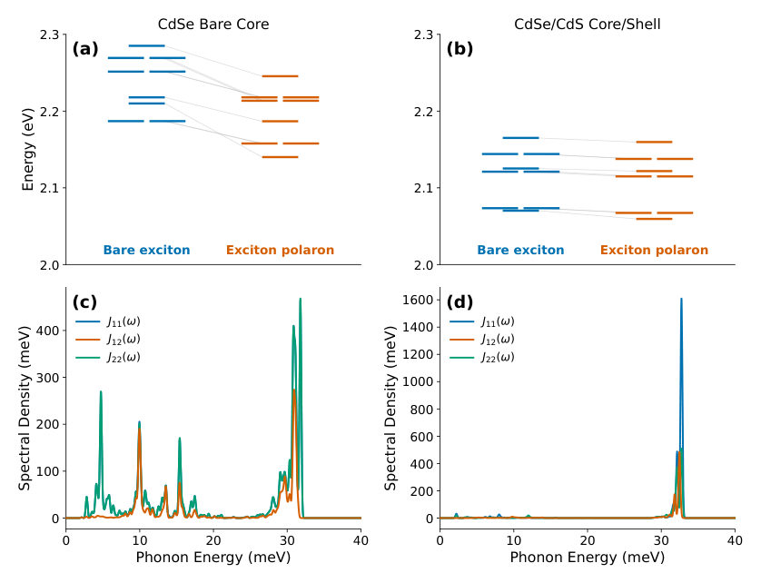
<figcaption class="paper-figure-caption"><b>Fig 1.</b> Figure 1. Atomistically parameterized exciton–phonon model for the two NCs. (a,b) Bare exciton energies E0 n at the equilibrium geometry and the corresponding polaron energies E0 n −λnn for the lowest 9 excitonic states of (a) the 3 nm CdSe core NC and (b) the 3 nm CdSe/ 2ML CdS core–shell NC. (c,d) Exciton–phonon spectral densities Jnm(ω) for the two lowest excitonic states, including the diagonal components J11(ω) and J22(ω) and the off-diagonal coupling J12(ω), for (c) CdSe core and (d) CdSe/CdS core–shell NCs. Note that the J11(ω) and J22(ω) for bare-core CdSe overlap. The bare CdSe core shows substantial low-frequency spectral weight below ∼25 meV, whereas the core–shell system is...</figcaption>
</figure>
<figure class="paper-figure-card">
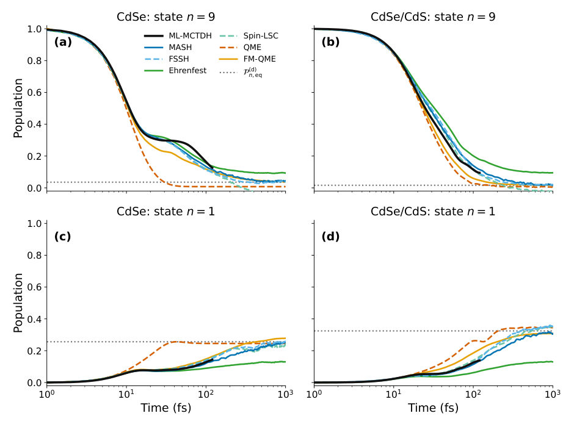
<figcaption class="paper-figure-caption"><b>Fig 2.</b> Figure 2. Real-time diabatic population dynamics P(d) n (t) for CdSe core and CdSe/CdS core–shell NCs for the highest n = 9 and lowest n = 1 excitonic states. Thermofield ML-MCTDH method is used as the benchmark. Three classes of approximate methods are compared: perturbative QME, mean-field (Ehrenfest, spin-LSC), and surface hopping (MASH and FSSH) ap- proaches. The black dotted line is the diabatic equilibrium population calculated with PIMC. The benchmark model includes a total of 9 excitonic states and 360 modes simulated at 300 K.</figcaption>
</figure>
<figure class="paper-figure-card">
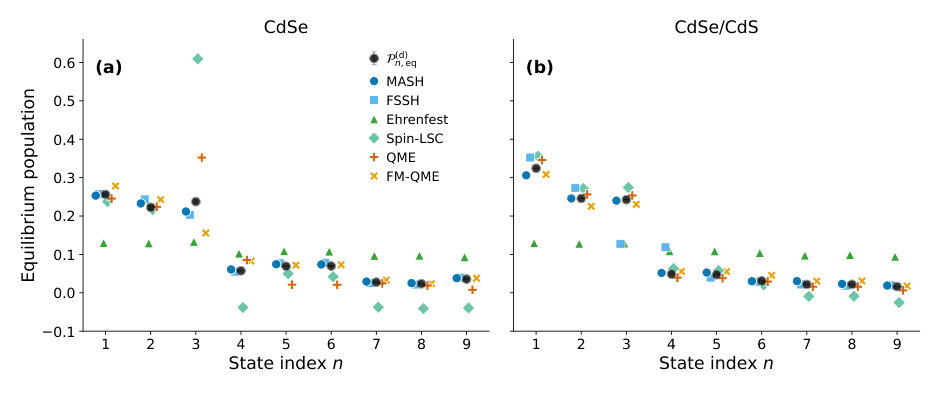
<figcaption class="paper-figure-caption"><b>Fig 3.</b> Figure 3. State-resolved diabatic equilibrium populations for (a) CdSe core and (b) CdSe/CdS core–shell NCs at 300 K. The reference P(d) n,eq values are obtained from PIMC (the statistical uncertainty is smaller than the symbol size), using the full exciton–phonon Hamiltonian, while the other symbols show the long-time or method-specific equilibrium populations predicted by MASH, FSSH, Ehrenfest, spin-LSC, QME, and FM-QME. State indices are ordered from the lowest-energy exciton, n = 1, to the highest state included in the model, n = 9.</figcaption>
</figure>
<figure class="paper-figure-card">
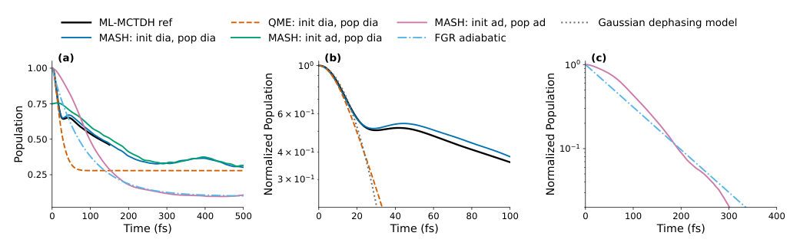
<figcaption class="paper-figure-caption"><b>Fig 4.</b> Figure 4. Results for a reduced two-level exciton–phonon model. (a) Population dynamics from ML-MCTDH, MASH, QME and FGR for a chosen initial state and population basis. “init dia, pop dia” denotes diabatic initialization and diabatic population measurement; “init ad, pop dia” and “init ad, pop ad” denote adiabatic initialization with diabatic or adiabatic population measurement, respectively. Diabatic initialization produces an ultrafast initial decay followed by slower relaxation, whereas adiabatic initialization removes the fast component. (b) Short-time normalized population dynamics, compared with the Gaussian dephasing model (cf., Eq. (26)). (c) Slow relaxation component compared with...</figcaption>
</figure>
<figure class="paper-figure-card">
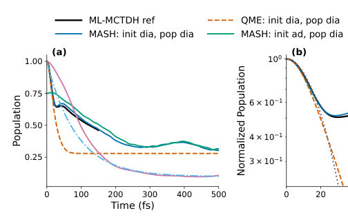
<figcaption class="paper-figure-caption"><b>Fig 5.</b> Fig. 4 panel (b) compares the dynamics generated by this short-time expression with the normalized popula- tion ˜Pn(t) = Pn(t)−Pn,eq Pn(0)−Pn,eq and shows that it captures the fast decay observed in both the QME and MASH dynamics quite well. Analyzing Eq. (26) suggests that</figcaption>
</figure>
</div>

<p><strong>Summary.</strong> This study benchmarks various quantum and mixed quantum-classical methods against exact dynamics to study hot-exciton cooling in nanocrystals. It reveals that the initial ultrafast cooling is caused by rapid state mixing from low-frequency phonons rather than traditional energy relaxation. The results identify MASH as a highly reliable approximation for these complex vibronic systems.</p>
<p><strong>Why it may be interesting.</strong> The paper provides a rigorous benchmark for non-adiabatic dynamics in the intermediate-coupling regime, specifically addressing how thermal fluctuations of couplings drive rapid dephasing/mixing, which is highly relevant to open quantum systems and many-body dynamics.</p>
<details>
<summary>Detailed structure</summary>
<p><strong>Main problem.</strong> Assessing the accuracy of various perturbative and mixed quantum-classical dynamical methods for describing hot-exciton relaxation and cooling in semiconductor nanocrystals.</p>
<p><strong>Main result.</strong> The MASH (Mapping Approach to Surface Hopping) method provides the most consistent agreement with exact quantum benchmarks, while the ultrafast cooling component is identified as rapid diabatic state mixing driven by low-frequency phonons.</p>
<p><strong>Method.</strong> Benchmarking various approximations (QME, Ehrenfest, Spin-LSC, FSSH, MASH) against numerically exact ML-MCTDH dynamics and PIMC equilibrium populations.</p>
<p><strong>Model / system.</strong> Atomistically parameterized models of CdSe core and CdSe/CdS core-shell nanocrystals using a linear vibronic coupling Hamiltonian and semi-empirical pseudopotentials.</p>
<p><strong>Key observables.</strong> Time-dependent average exciton energy, diabatic and adiabatic populations, and exciton-phonon spectral densities.</p>
<p><strong>Important parameters / regimes.</strong> Temperature (300 K), nanocrystal size (3 nm), and the separation of timescales between ultrafast (~10 fs) and slow (~100 fs) relaxation.</p>
<p><strong>Assumptions / limitations.</strong> Linear vibronic coupling (first-order expansion), static screening approximation for the Bethe-Salpeter equation, and use of the harmonic approximation for the nuclear Hamiltonian.</p>
<p><strong>Figures summary.</strong> Fig 1: Exciton energies and spectral densities for CdSe and CdSe/CdS. Fig 2: Real-time diabatic population dynamics comparison. Fig 3: State-resolved diabatic equilibrium populations. Fig 5: Exciton energy relaxation over time.</p>
<p><strong>Paper structure.</strong> The paper introduces the physical problem of exciton cooling, defines the atomistic models and Hamiltonian, details the benchmark and approximate dynamical methods, presents comparative results for population dynamics and energy relaxation, and concludes with mechanistic insights.</p>
</details>
<details>
<summary>Abstract</summary>
<p>Hot-exciton relaxation in semiconductor nanocrystals (NCs) is often described using perturbative theories, but their accuracy is difficult to assess for realistic exciton--phonon Hamiltonians. Here, we benchmark the perturbative quantum master equation (QME) and several mixed quantum--classical (MQC) methods against fully quantum mechanical dynamics. Using atomistically parameterized models for CdSe core and CdSe/CdS core--shell NCs, we find that bare CdSe exhibits an ultrafast initial decay followed by slower cooling, whereas the core--shell system is dominated by the slower component. Analysis of reduced models shows that the ultrafast component arises from rapid diabatic state mixing driven by thermal fluctuations of low-frequency phonons, rather than from nuclear-assisted energy relaxation. The QME captures the initial fast decay but can fail for the slower relaxation in the diabatic representation, while the mapping approach to surface hopping (MASH) gives the most consistent agreement with both benchmark dynamics and equilibrium populations. These results establish a benchmark for exciton-cooling dynamics in NCs and clarify the physical regimes in which widely used approximate methods are reliable.</p>
</details>
<p><sub><a href="#top">↑ back to top</a></sub></p>

<p><a id="paper-2605.28463"></a></p>
<h3 id="substrate-driven-topological-engineering-in-plasmonic-su-schrieffer-heeger-chains"><a href="http://arxiv.org/abs/2605.28463v1">Substrate-driven topological engineering in plasmonic Su-Schrieffer-Heeger chains</a></h3>
<p><strong>Authors:</strong> Florian Herz, Alireza Naeimi, Svend-Age Biehs<br>
<strong>Type:</strong> theory · <strong>Category:</strong> other · <strong>PDF:</strong> <a href="https://arxiv.org/pdf/2605.28463v1">https://arxiv.org/pdf/2605.28463v1</a><br>
<strong>Analysis basis:</strong> full PDF text, analyzed in chunks
<strong>Topic relevance:</strong> <code>correlated / nonlocal dissipation</code> <strong>2/5</strong> · <code>driven-dissipative phase transition</code> <strong>2/5</strong> · <code>exotic spin models in light-matter</code> <strong>2/5</strong></p>
<div class="figure-strip-hint">↔ Scroll figures horizontally</div>
<div class="paper-figures-scroll">
<figure class="paper-figure-card">
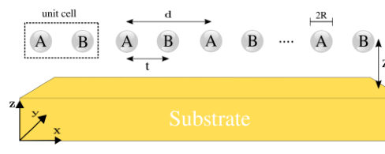
<figcaption class="paper-figure-caption"><b>Fig 1.</b> FIG. 1: Sketch of the considered system. A bipartite SSH chain of nanoparticles of radius R with lattice constant d in each sublattice A and B and separation distance t within each unit cell is placed at a distance z in close vicinity to a semi- infinite planar substrate.</figcaption>
</figure>
<figure class="paper-figure-card">
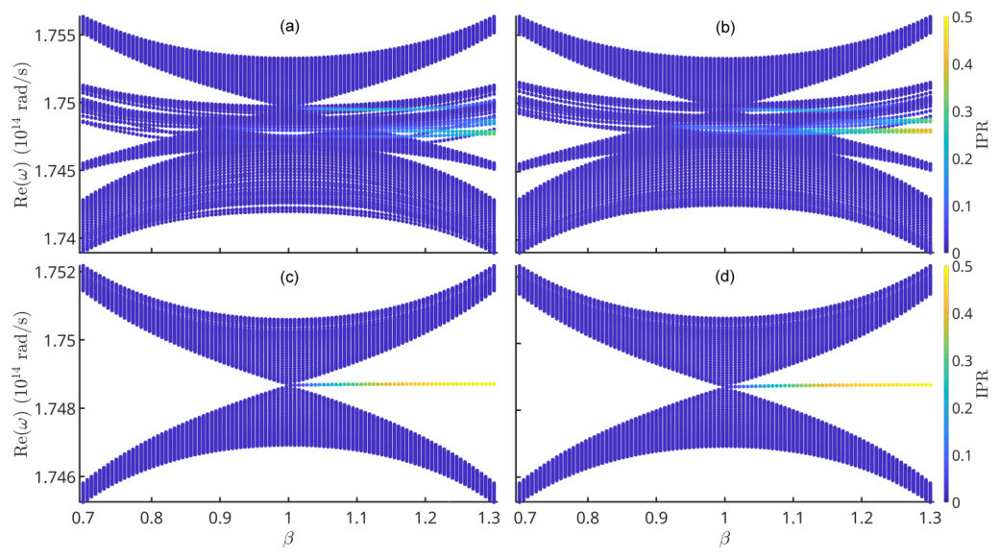
<figcaption class="paper-figure-caption"><b>Fig 2.</b> FIG. 2: Eigenfrequencies and IPR values for IP (a),(b) and OP modes (c),(d) for nsub = 1.34 × 1019 cm−3 (a),(c) and nsub = 1.36 × 1019 cm−3 (b),(d) at z = 500 for different β and a total of N = 80 particles.</figcaption>
</figure>
<figure class="paper-figure-card">
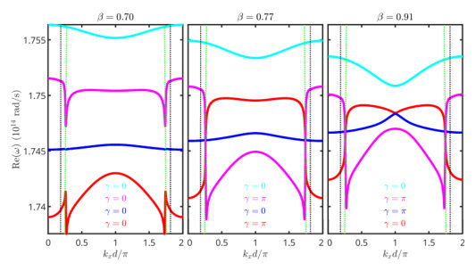
<figcaption class="paper-figure-caption"><b>Fig 3.</b> FIG. 3: IP band structure for z = 500 nm and nsub = 1.36 × 1019 cm−3 for different β values. For each band, the Zak phases are given in the corresponding colors. The dashed lines correspond to the light lines in vacuum (black) and the surface polariton light line, i.e. the surface mode dispersion relation, of the InSb substrate (green) taken from Eq. (10).</figcaption>
</figure>
<figure class="paper-figure-card">
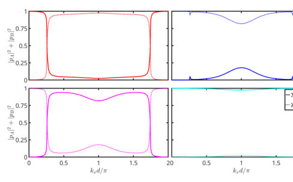
<figcaption class="paper-figure-caption"><b>Fig 4.</b> FIG. 4: Polarizations of the unit cell |pA|2 + |pB|2 in x (solid) and z (dashed) direction for each band in Fig. 3 at β = 0.77.</figcaption>
</figure>
<figure class="paper-figure-card">
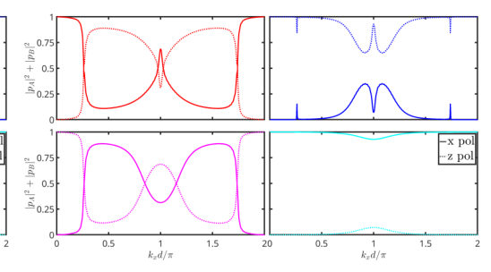
<figcaption class="paper-figure-caption"><b>Fig 5.</b> FIG. 6: Polarizations of the unit cell |pA|2 + |pB|2 in x (solid) and z (dashed) direction for each band in Fig. 3 at β = 0.91.</figcaption>
</figure>
</div>

<p><strong>Summary.</strong> The paper demonstrates that the topological properties of a plasmonic SSH chain can be controlled by its interaction with a substrate. By tuning the distance to the substrate or the substrate's doping, one can induce topological phase transitions and create protected edge modes. These findings also show that such topological features can be used to modulate spectral radiative heat transfer.</p>
<p><strong>Why it may be interesting.</strong> This work is highly relevant to quantum optics and open quantum systems as it demonstrates how controlling the external electromagnetic environment (the substrate) can be used to manipulate topological edge states and near-field energy transport.</p>
<details>
<summary>Detailed structure</summary>
<p><strong>Main problem.</strong> Investigating how the electromagnetic environment of a substrate can be used to engineer the topological band structure and induce topological phase transitions in a plasmonic Su-Schrieffer-Heeger (SSH) chain.</p>
<p><strong>Main result.</strong> The substrate interaction introduces two mechanisms—long-range band hybridization and short-range band touching—that can trigger topological phase transitions and enable the emergence of protected edge modes even in previously trivial regimes.</p>
<p><strong>Method.</strong> The study uses a Green's function approach within the dipole approximation and the quasistatic limit, applying Bloch's theorem and calculating the Zak phase and Inverse Participation Ratio (IPR).</p>
<p><strong>Model / system.</strong> A bipartite array of N identical InSb nanoparticles arranged in an SSH chain, placed at a distance z from a semi-infinite InSb planar substrate.</p>
<p><strong>Key observables.</strong> Band structure, Zak phase, Inverse Participation Ratio (IPR), polarization (in-plane vs. out-of-plane), and spectral radiative heat flux.</p>
<p><strong>Important parameters / regimes.</strong> Dimerization parameter (beta), chain-substrate distance (z), substrate carrier density (n_sub), and disorder strength (rho).</p>
<p><strong>Assumptions / limitations.</strong> The system is modeled using the dipole approximation in the quasistatic limit, and higher-order multipole moments are neglected.</p>
<p><strong>Figures summary.</strong> Fig 1: System schematic; Fig 2: Eigenfrequencies and IPR; Fig 3: Infinite chain band structure and SPP interaction; Fig 4: Unit cell polarization; Fig 5: Nearest-neighbor approximation comparison; Fig 8: Eigenfrequencies/IPR vs distance; Fig 9: IP band structure; Fig 10-11: Band structure under disorder; Fig 12-14: Spectral radiative heat flux and robustness analysis.</p>
<p><strong>Paper structure.</strong> The paper introduces the plasmonic SSH system, details the mathematical framework for substrate-induced interactions, analyzes the two distinct topological engineering mechanisms (hybridization and band touching), evaluates the robustness of edge modes against structural disorder, and concludes with the implications for near-field radiative heat transfer.</p>
</details>
<details>
<summary>Abstract</summary>
<p>We demonstrate the possibility of engineering the topological band structure of a plasmonic Su-Schrieffer-Heeger (SSH) chain through the interaction with its electromagnetic environment. We find that the long-range interaction of the in-plane modes of the SSH chain with the surface plasmon polaritons of a planar substrate introduces a band hybridization connected to a change of the Zak phase. On the other hand, the short-range interaction with the substrate introduces a band touching, again with a change in the Zak phase. Surprisingly, this second mechanism enables the emergence of topologically protected edge modes for parameters which correspond to the topologically trivial phase for an isolated plasmonic SSH chain. We study these mechanisms by changing the chain-substrate distance and the dimerization parameter. Finally, we discuss the robustness against disorder and, as one example, the impact of the observed effects on the near-field radiative heat transfer along the chain. Our findings pave the way to the engineering of edge modes in plasmonic topological configurations via the coupling to a plasmonic environment.</p>
</details>
<p><sub><a href="#top">↑ back to top</a></sub></p>

<p><a id="paper-2605.28383"></a></p>
<h3 id="unity-order-coupling-between-free-electrons-and-multiphoton-waveguided-fock-states"><a href="http://arxiv.org/abs/2605.28383v1">Unity-order coupling between free electrons and multiphoton waveguided Fock states</a></h3>
<p><strong>Authors:</strong> L. Prelat, S. Abdullah, C. I. Velasco, F. J. García de Abajo<br>
<strong>Type:</strong> theory · <strong>Category:</strong> quantum information and computing · <strong>PDF:</strong> <a href="https://arxiv.org/pdf/2605.28383v1">https://arxiv.org/pdf/2605.28383v1</a><br>
<strong>Analysis basis:</strong> full PDF text, analyzed in chunks
<strong>Topic relevance:</strong> <code>entanglement &amp; information structure</code> <strong>2/5</strong> · <code>interference shaping light</code> <strong>2/5</strong></p>
<div class="figure-strip-hint">↔ Scroll figures horizontally</div>
<div class="paper-figures-scroll">
<figure class="paper-figure-card">
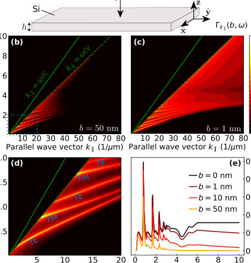
<figcaption class="paper-figure-caption"><b>Fig 1.</b> FIG. 1. Free-electron coupling to a planar waveguide in a parallel-trajectory configuration. (a) Schematic representation of an e-beam moving with velocity v = vˆy at a distance b from a self-standing laterally extended Si waveg- uide of thickness h. (b,c) Wave-vector- and energy-resolved EELS probability per unit of path length [Eq. (1b)] for (b) b = 50 nm and (c) b = 1 nm. (d) Close-up of the low-energy region in (b). Labels indicate the TM and TE nature of the waveguided modes. (e) EELS probability per unit of path length [Eq. (1a)] for different values of b. In all panels, the waveguide thickness is h = 200 nm, and the electron kinetic energy is 200 keV. Solid and dashed green lines in...</figcaption>
</figure>
<figure class="paper-figure-card">
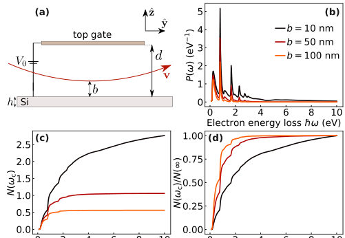
<figcaption class="paper-figure-caption"><b>Fig 2.</b> FIG. 2. Electron coupling to a planar waveguide for a parabolic trajectory. (a) Schematic representation of an e-beam under grazing incidence on an extended planar Si waveguide of thickness h, separated by a distance d from a top gate biased at a voltage V0. We consider d to be large enough to neglect the electron–waveguide interaction at the point of electron entrance in the capacitor region. The parabolic elec- tron trajectory is determined by the vertical uniform repul- sive electric field EDC = V0/d &gt; 0 and the minimum distance b from the waveguide (turning point). (b) Energy-resolved EELS probability P(ω) [Eq. (6)] for different values of b. (c) Energy-integrated EELS probability N(ωc)...</figcaption>
</figure>
<figure class="paper-figure-card">
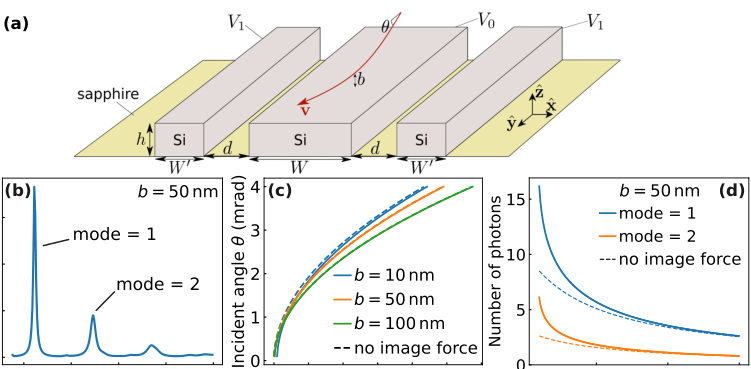
<figcaption class="paper-figure-caption"><b>Fig 3.</b> FIG. 3. Electron coupling to waveguide modes in a biased waveguide geometry. (a) We consider a conductive Si central waveguide (voltage V0) flanked by two Si electrodes (voltage V1) supported on a sapphire substrate. The scheme shows the geometrical parameters of the system (W = 500 nm, W ′ = 250 nm, d = 100 nm, and h = 300 nm in our calculations). We consider 100 keV electrons moving in the y −z plane of specular symmetry with velocity v parallel to the waveguide. The minimum electron–waveguide distance b is determined by the initial incidence angle θ ≪1. (b) EELS probability per unit of path length for a fixed electron–waveguide distance of 50 nm. (c) Relation between incidence angle θ...</figcaption>
</figure>
<figure class="paper-figure-card">
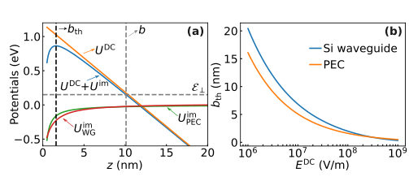
<figcaption class="paper-figure-caption"><b>Fig 4.</b> FIG. 4. Effect of the image potential model on the threshold electron–waveguide distance. (a) Out-of- plane electron potential energy U(z) = U DC(z) + U im(z) and its DC and image components for EDC = 108 V/m. We in- dicate the turning-point distance b ≈10 nm for a specific normal electron energy E⊥(horizontal dashed line), as de- termined by the intersection with the potential. For b below the threshold value bth, the trajectory impacts the waveg- uide surface at z = 0. We compare the image potential for a PEC and a Si waveguide of 200 nm thickness. (b) Depen- dence of the threshold distance bth on the external DC field EDC, calculated when the image potential is either taken for a PEC...</figcaption>
</figure>
<figure class="paper-figure-card">
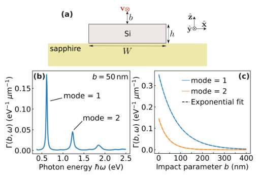
<figcaption class="paper-figure-caption"><b>Fig 5.</b> FIG. 5. Calculation of the EELS probability and its exponential decay away from a 1D waveguide. (a) Transverse cross-section of the geometry under consideration, including an electron (red dot) moving with velocity v at a distance b from the sapphire-supported Si waveguide. (b) EELS probability per unit of path length as obtained from BEM for b = 50 nm, W = 500 nm, h = 300 nm, and 100 keV electrons. (c) Dependence of the peak probability for modes 1 and 2 on b (solid curves) and exponential fits (dashed curves).</figcaption>
</figure>
</div>

<p><strong>Summary.</strong> This paper proposes using electrostatic fields to steer electron beams into grazing trajectories near silicon waveguides. This technique allows for tunable control over the interaction, significantly increasing the number of photons generated per electron while suppressing unwanted energy losses.</p>
<p><strong>Why it may be interesting.</strong> The work demonstrates a method for generating tunable, high-yield multiphoton Fock states and entangled electron-photon states, which is highly relevant for quantum nanophotonics and quantum light-matter interfaces.</p>
<details>
<summary>Detailed structure</summary>
<p><strong>Main problem.</strong> The coupling between free electron beams and waveguided optical modes is typically limited by short interaction times and a lack of spectral selectivity due to fixed straight-line trajectories.</p>
<p><strong>Main result.</strong> Electrostatic steering of electron trajectories creates a tunable turning point that enhances coupling strength, enables modal selectivity, and can produce high photon yields exceeding ten photons per electron.</p>
<p><strong>Method.</strong> The authors use the Boundary Element Method (BEM) to calculate electrostatic potentials and the local-response approximation to determine momentum-resolved Electron Energy-Loss Spectroscopy (EELS) probabilities.</p>
<p><strong>Model / system.</strong> A system consisting of a 100-200 keV electron beam interacting with a rectangular silicon waveguide, utilizing either vertical or lateral electrostatic gating to deflect the electron trajectory.</p>
<p><strong>Key observables.</strong> EELS probability (energy-loss probability), photon yield per electron, and modal selectivity (TE vs. TM modes).</p>
<p><strong>Important parameters / regimes.</strong> Electron kinetic energy (100-200 keV), impact parameter (b), electron incidence angle, and applied electrostatic bias voltage.</p>
<p><strong>Assumptions / limitations.</strong> The silicon waveguide is modeled as a Perfect Electric Conductor (PEC) for DC potential calculations, and the electron velocity is assumed to be nearly constant during the interaction.</p>
<p><strong>Figures summary.</strong> Figure 1 shows the electron-waveguide geometry and EELS probability for different impact parameters; Figure 3 illustrates the lateral gating configuration and photon yield vs. incidence angle; Figures 5-7 detail the EELS spectrum, decay of probability with distance, and the electrostatic potential distributions for various gating geometries.</p>
<p><strong>Paper structure.</strong> The paper introduces the problem of limited electron-waveguide coupling, proposes electrostatic steering as a solution, details the theoretical framework and numerical methods (BEM/EELS), compares different gating configurations (planar vs. lateral), and quantifies the resulting photon yield and tunability.</p>
</details>
<details>
<summary>Abstract</summary>
<p>Electron beams enable highly localized near-field excitation of waveguided optical modes, yet their coupling is typically limited by short interaction times along straight-line trajectories with fixed impact parameters. Here, we theoretically demonstrate that electrostatic steering overcomes this limitation by introducing a tunable turning point in grazing electron trajectories, thus controlling the minimum electron--waveguide separation and producing strong coupling to waveguided modes. Specifically, we consider a biased rectangular silicon waveguide, where a repulsive static field deflects a grazing electron. In this configuration, the electron turning point governs both the coupling strength and the modal selectivity, which can be dynamically tuned through the electron incidence angle and the applied bias. In addition, the aloof electron--waveguide interaction suppresses lossy high-energy channels (e.g., above the silicon band gap) while preserving substantial excitation of the targeted waveguided modes. Using a practical biasing configuration and 100~keV electrons, we predict an average yield exceeding ten photons per electron, with voltage-tunable control of the interaction. Our results establish electrostatic steering as a practical route for engineering and enhancing free-electron coupling to waveguided photonic modes.</p>
</details>
<p><sub><a href="#top">↑ back to top</a></sub></p>

<p><a id="paper-2605.27657"></a></p>
<h3 id="a-supersymmetric-study-of-charge-and-spin-transport-in-weyl-semimetals-under-axionic-electrodynamic-response"><a href="http://arxiv.org/abs/2605.27657v1">A supersymmetric study of charge and spin transport in Weyl semimetals under axionic electrodynamic response</a></h3>
<p><strong>Authors:</strong> J. C. Pérez-Pedraza, A. Martín-Ruiz, L. F. Urrutia<br>
<strong>Type:</strong> theory · <strong>Category:</strong> other · <strong>PDF:</strong> <a href="https://arxiv.org/pdf/2605.27657v1">https://arxiv.org/pdf/2605.27657v1</a><br>
<strong>Analysis basis:</strong> full PDF text, analyzed in chunks
<strong>Topic relevance:</strong> <code>non-equilibrium dynamics</code> <strong>2/5</strong></p>
<div class="figure-strip-hint">↔ Scroll figures horizontally</div>
<div class="paper-figures-scroll">
<figure class="paper-figure-card">
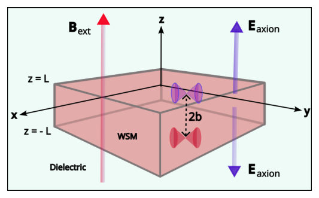
<figcaption class="paper-figure-caption"><b>Fig 1.</b> FIG. 1. System under study consisting of a semi-infinite slab of a Weyl semimetal of thickness 2L in z-direction immersed in an external magnetic field in z-direction. The axion magnetoelectric response in the material induces a non-homogeneous electric field in the same direction. We consider the interior problem only, i.e. in the region −L &lt; z &lt; +L.</figcaption>
</figure>
<figure class="paper-figure-card">
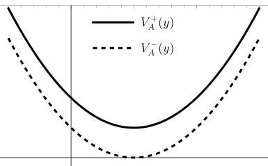
<figcaption class="paper-figure-caption"><b>Fig 2.</b> FIG. 2. Potentials of the magnetic and electric Hamiltonians for the case Ax(y) = −B0y and ϕ(z) = −ρ0</figcaption>
</figure>
<figure class="paper-figure-card">
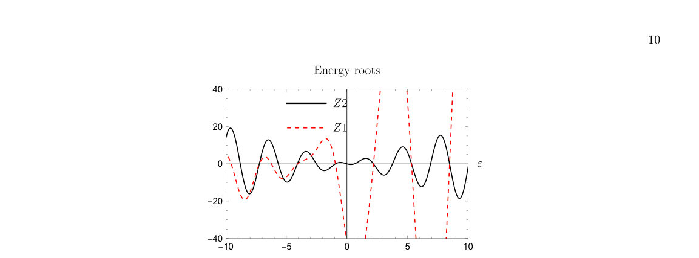
<figcaption class="paper-figure-caption"><b>Fig 3.</b> FIG. 3. The dimensionless energy eigenvalues εn,m, for n = 0, for the conditions Z2 = 0 (solid, black lines) and Z1 = 0 (dashed, red lines). The parameters are B0 = 1.0 T, b = 0.26 nm−1 and L = 100 nm.</figcaption>
</figure>
<figure class="paper-figure-card">
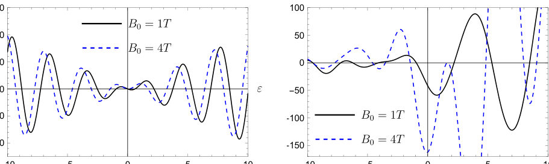
<figcaption class="paper-figure-caption"><b>Fig 4.</b> FIG. 4. The dimensionless energy eigenvalues εn,m, for n = 0, for the conditions a) Z2 = 0 and b) Z1 = 0, for magnetic fields B0 = 1T (solid, black lines) and B0 = 4T (dashed, blue lines), respectively. The remaining parameters are b = 0.26 nm−1 and L = 100 nm.</figcaption>
</figure>
<figure class="paper-figure-card">
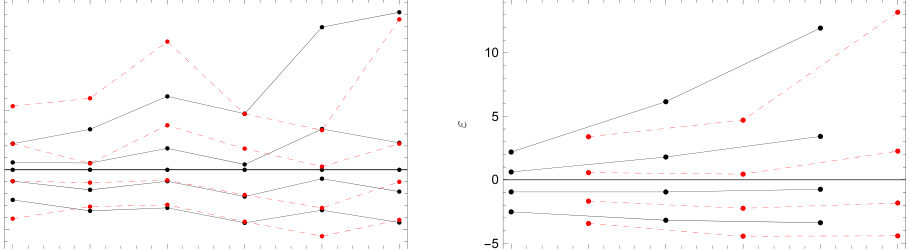
<figcaption class="paper-figure-caption"><b>Fig 5.</b> FIG. 5. The dimensionless energy eigenvalues εn,m, for m = −2, −1, 0, 1, 2 (in ascendant order) as a function of the quantum number n. a) Complete spectrum (even and odd n). Black solid lines represent the roots of the condition Z2 = 0, while red dashed lines represent the roots of the condition Z2 = 0. b) Even n (black solid) and odd n (red dashed) coming from the condition Z2 = 0. In this plot the m = 0 roots are not included to avoid image saturation.</figcaption>
</figure>
</div>

<p><strong>Summary.</strong> This paper explores how the interplay between axionic electrodynamics and supersymmetry governs transport in Weyl semimetals. By using supersymmetric quantum mechanics, the authors solve the Dirac equation to reveal how magnetic and electric fields induce chiral imbalances and specific spin currents. The results provide a theoretical framework for understanding the effective field theory of Weyl semimetals under external magnetic influence.</p>
<p><strong>Why it may be interesting.</strong> not directly relevant</p>
<details>
<summary>Detailed structure</summary>
<p><strong>Main problem.</strong> Investigating the charge and spin transport properties of Weyl semimetals under an external magnetic field, specifically focusing on the effects of axionic electrodynamic response.</p>
<p><strong>Main result.</strong> The study demonstrates that the system's dynamics separate into a magnetic sector with supersymmetric factorization and an electric sector with PT-supersymmetric structure, leading to a chiral imbalance and specific spin-current patterns.</p>
<p><strong>Method.</strong> The authors use a low-energy effective Dirac-Weyl theory, applying chiral transformations, supersymmetric quantum mechanics (SUSY QM), and solving the resulting equations using tri-confluent Heun functions and numerical methods.</p>
<p><strong>Model / system.</strong> A Weyl semimetal (WSM) modeled as a plane slab of thickness 2L in a uniform external magnetic field, characterized by axion electrodynamics where the axial term is replaced by an effective electromagnetic response.</p>
<p><strong>Key observables.</strong> Chiral projections of probability and current densities, spin density, spin currents, and axial probability density.</p>
<p><strong>Important parameters / regimes.</strong> Fermi velocity (vF), axial 4-vector (b), magnetic field (B0), slab thickness (L), and the axion-like field theta(x).</p>
<p><strong>Assumptions / limitations.</strong> Low-energy approximation near Weyl nodes, neglect of lattice regularization and band curvature, and a one-particle domain where the axial anomaly is absent.</p>
<p><strong>Figures summary.</strong> Figure 1 shows a schematic of the WSM slab; Figures 5-6 show energy eigenvalues as a function of quantum numbers and magnetic field; Figures 7-10 display probability and current densities for different chiralities.</p>
<p><strong>Paper structure.</strong> The paper begins by defining the WSM Hamiltonian and applying a chiral transformation to derive axion electrodynamics, then proceeds to decouple the Dirac equation into magnetic and electric sectors, solves these sectors using SUSY and PT-SUSY techniques (including Heun functions), and concludes with the calculation of transport observables and conservation laws.</p>
</details>
<details>
<summary>Abstract</summary>
<p>We investigate the charge and spin transport properties of a Weyl semimetal under an external magnetic field using a low-energy effective theory. By performing a chiral transformation, we remove the axial term from the fermionic Lagrangian, while its physical effects are retained through the system's electromagnetic response. This response, derived from integrating out the fermionic degrees of freedom, takes the form of axionic electrodynamics and enters the Dirac equation via minimal coupling. The resulting dynamics separate naturally into magnetic and electric components: the magnetic sector admits a supersymmetric factorization, while the electric part exhibits a PT-supersymmetric structure. Robin boundary conditions are applied to the spinor, setting the energy spectrum and defining exact spinor solutions. We obtain the chiral projections of probability and current densities, exhibiting a chiral imbalance in the material. We show that in the x-direction, only one chirality contributes to the chiral current ($j^x_l = 0$). Spin density and currents where also computed. Our results demonstrate how the interplay between axionic response and supersymmetry governs transport phenomena in our specific setup, offering novel insights into the effective field theory description of Weyl semimetals.</p>
</details>
<p><sub><a href="#top">↑ back to top</a></sub></p>

<p><a id="paper-2605.27830"></a></p>
<h3 id="magneto-optical-detection-of-anisotropic-spin-currents-in-altermagnetic-ruo2"><a href="http://arxiv.org/abs/2605.27830v1">Magneto-Optical Detection of Anisotropic Spin Currents in Altermagnetic RuO2</a></h3>
<p><strong>Authors:</strong> Joongwon Lee, Jeonglyul Kim, Sreejith Nair, Seung Gyo Jeong, Changi Kim, Jae-Pil So, Bohm-Jung Yang, Bharat Jalan, Hyobin Yoo, Farhan Rana, Taekoo Oh, Hong-Gyu Park<br>
<strong>Type:</strong> both · <strong>Category:</strong> strongly correlated electrons · <strong>PDF:</strong> <a href="https://arxiv.org/pdf/2605.27830v1">https://arxiv.org/pdf/2605.27830v1</a><br>
<strong>Analysis basis:</strong> full PDF text, analyzed in chunks
<strong>Topic relevance:</strong> <code>spintronics-quantum-optics interface</code> <strong>2/5</strong></p>
<div class="figure-strip-hint">↔ Scroll figures horizontally</div>
<div class="paper-figures-scroll">
<figure class="paper-figure-card">
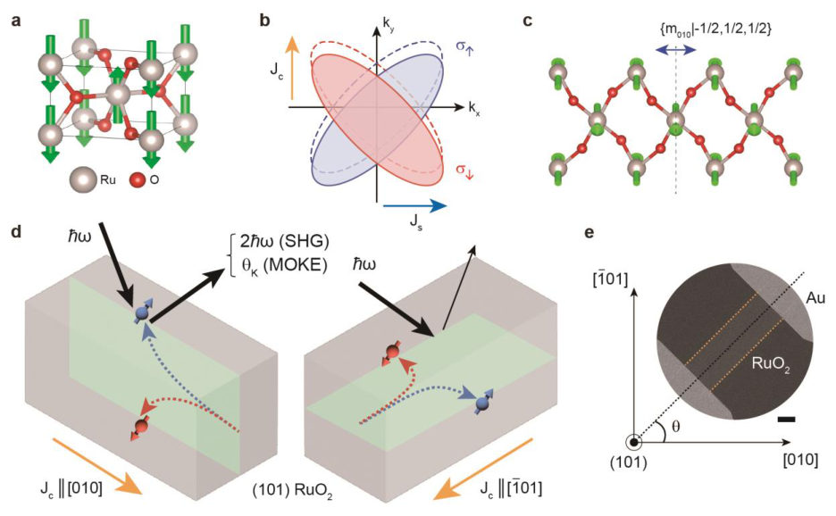
<figcaption class="paper-figure-caption"><b>Fig 1.</b> Fig. 1. Crystal symmetry and optical detection scheme. a, Crystallographic and magnetic</figcaption>
</figure>
<figure class="paper-figure-card">
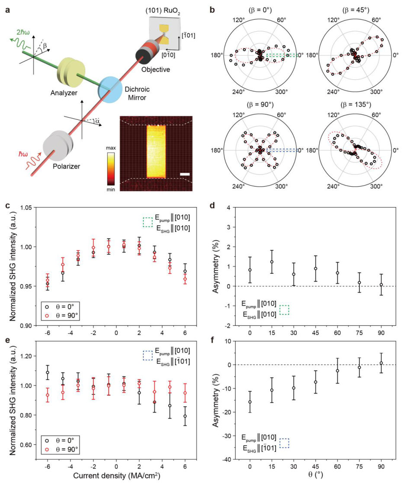
<figcaption class="paper-figure-caption"><b>Fig 2.</b> Fig. 2. SHG measurements of Nèel order. a, Schematic diagram of the SHG setup. A half-wave</figcaption>
</figure>
<figure class="paper-figure-card">
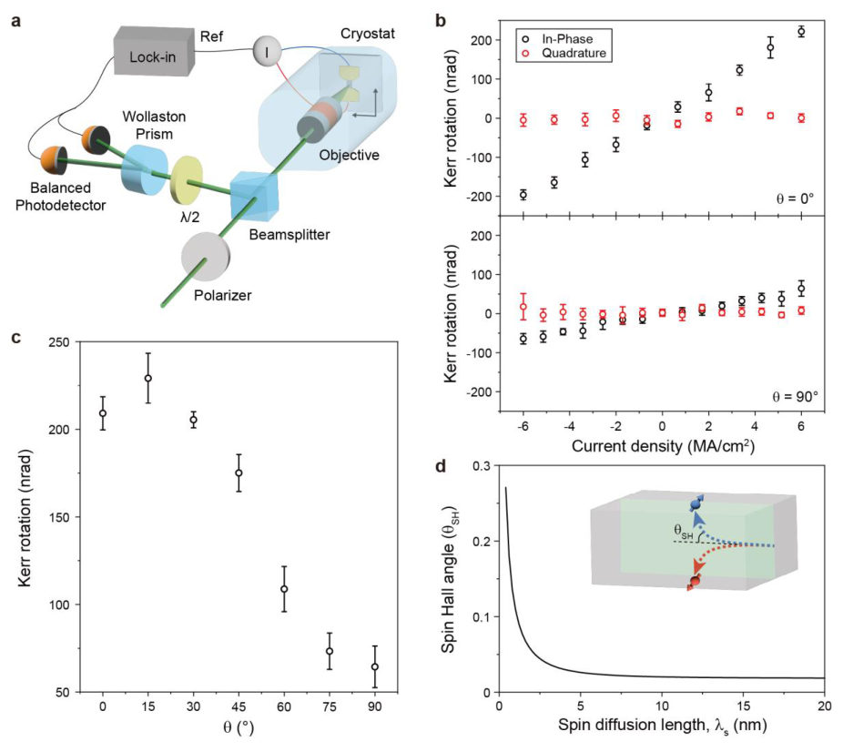
<figcaption class="paper-figure-caption"><b>Fig 3.</b> Fig. 3. MOKE measurements of the ASSE. a, Schematic of the MOKE setup. b, MOKE signal</figcaption>
</figure>
<figure class="paper-figure-card">
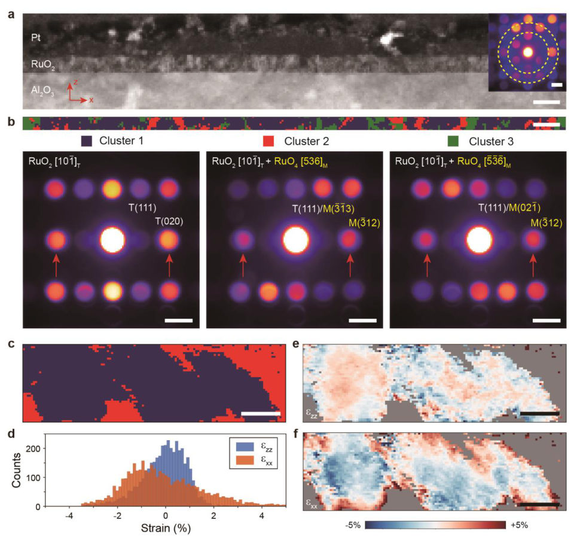
<figcaption class="paper-figure-caption"><b>Fig 4.</b> Fig. 4. STEM imaging of thin-film strain. a, Virtual annular dark-field (VADF) image generated</figcaption>
</figure>
</div>

<p><strong>Summary.</strong> This paper provides experimental evidence for the altermagnetic spin-splitter effect in RuO2 thin films using magneto-optical probes. By demonstrating directionally anisotropic spin accumulation, the study establishes RuO2 as a promising material for field-free spintronic devices.</p>
<p><strong>Why it may be interesting.</strong> not directly relevant</p>
<details>
<summary>Detailed structure</summary>
<p><strong>Main problem.</strong> The study aims to determine if metallic RuO2 sustains robust altermagnetic order in films thicker than the ultrathin limit and to distinguish the intrinsic altermagnetic spin-splitter effect (ASSE) from extrinsic mechanisms like the Spin Hall Effect or Rashba-type splitting.</p>
<p><strong>Main result.</strong> The researchers experimentally demonstrate directionally anisotropic spin accumulation in 12-nm RuO2 films, confirming the presence of the altermagnetic spin-splitter effect and establishing RuO2 as an efficient, symmetry-controlled spin source.</p>
<p><strong>Method.</strong> The study combines polarization-resolved Second-Harmonic Generation (SHG) and high-sensitivity polar Magneto-Optical Kerr Effect (MOKE) with 4D-STEM structural analysis and Kubo-formalism-based electronic structure calculations.</p>
<p><strong>Model / system.</strong> The physical system is a 12-nm-thick (1-01)-oriented RuO2 thin film grown on r-plane sapphire via molecular beam epitaxy, characterized by altermagnetic spin-split electronic bands and Néel order.</p>
<p><strong>Key observables.</strong> SHG intensity and asymmetry, MOKE rotation (Kerr rotation), spin Hall angle, and local lattice strain.</p>
<p><strong>Important parameters / regimes.</strong> 12-nm film thickness, Néel temperature (T_N ~ 500 K), current densities up to 6 x 10^6 A/cm^2, and MOKE sensitivity of ~10 nrad.</p>
<p><strong>Assumptions / limitations.</strong> The analysis assumes that the observed optical signals are intrinsic to the altermagnetic spin accumulation and not artifacts of Joule heating or thermal gradients.</p>
<p><strong>Figures summary.</strong> Figure 1 shows the crystallographic/magnetic structure, spin-split Fermi surfaces, and optical probing geometry; Figure 3 involves 4D-STEM analysis of structural clusters and strain mapping.</p>
<p><strong>Paper structure.</strong> The paper introduces the altermagnetic properties of RuO2, details the experimental setup for optical and structural characterization, presents the symmetry-driven anisotropic spin response, discusses the role of strain and structural heterogeneity, and concludes with the implications for spintronics.</p>
</details>
<details>
<summary>Abstract</summary>
<p>Altermagnets are a recently identified class of collinear antiferromagnets that host large spin-split electronic bands, offering a promising platform for efficient spin-current generation. Among proposed candidates, the metallic oxide RuO2 is predicted to exhibit strong altermagnetic spin splitting; however, whether it sustains robust magnetic order beyond the ultrathin thickness limit remains unresolved. Here, we employ optical probes to investigate charge-to-spin conversion in a 12-nm-thick (101)-oriented RuO2 film grown on sapphire. Polarization-resolved second-harmonic generation reveals nonlinear optical responses consistent with the surface symmetry and Néel order of RuO2. Under an applied current, both second-harmonic generation and polar magneto-optical Kerr effect measurements detect a pronounced, directionally anisotropic spin polarization, exhibiting enhanced signals for current along [010] and strongly suppressed responses for current along [-101], in agreement with the symmetry of the altermagnetic spin-splitter effect. Non-magnetic or Rashba-type mechanisms cannot explain this symmetry-selective response. Scanning transmission electron microscopy further reveals that substantial strain persists even in relatively thick films, providing a possible explanation for the observed behavior. Therefore, these results establish RuO2 as an efficient spin source and demonstrate the potential of altermagnets for field-free spintronic devices.</p>
</details>
<p><sub><a href="#top">↑ back to top</a></sub></p>

<p><a id="paper-2605.27826"></a></p>
<h3 id="quantum-anomalous-hall-effect-in-chiral-semimetals"><a href="http://arxiv.org/abs/2605.27826v1">Quantum anomalous Hall effect in chiral semimetals</a></h3>
<p><strong>Authors:</strong> Peng-Yi Liu, Yu-Hao Wan, Qing-Feng Sun<br>
<strong>Type:</strong> theory · <strong>Category:</strong> other · <strong>PDF:</strong> <a href="https://arxiv.org/pdf/2605.27826v1">https://arxiv.org/pdf/2605.27826v1</a><br>
<strong>Analysis basis:</strong> full PDF text, analyzed in chunks
<strong>Topic relevance:</strong> <code>non-equilibrium dynamics</code> <strong>2/5</strong></p>
<div class="figure-strip-hint">↔ Scroll figures horizontally</div>
<div class="paper-figures-scroll">
<figure class="paper-figure-card">
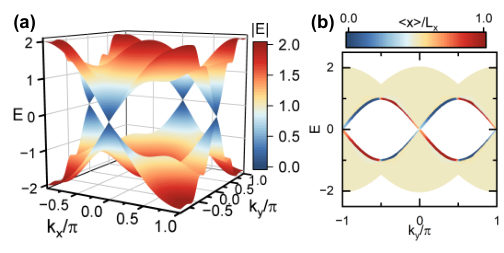
<figcaption class="paper-figure-caption"><b>Fig 1.</b> FIG. 1. (a) Two-dimensional band structure of the chiral semimetal model. (b) Band structure of a chiral semimetal nanoribbon, with the color encoding the position expectation of each state ⟨x⟩/Lx This nanoribbon has a width in the x- direction Lx = 100 and is of infinite extent in the y-direction. Throughout this paper, we use A = B = 1.</figcaption>
</figure>
<figure class="paper-figure-card">
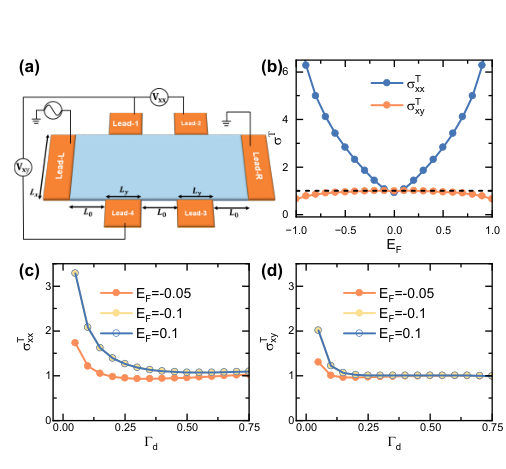
<figcaption class="paper-figure-caption"><b>Fig 2.</b> FIG. 2. (a) Schematic of a six-terminal Hall bar. Six leads are shown in orange, and the center region (shown in blue) is made of chiral semimetals. The width of lead-L and R is Lx = 100a, the width of Lead-(1-4) is Ly = 50a, and the spacing between the leads is L0 = 50a. (b) Longitudinal σT xx and Hall σT xy conductivity vs. Fermi energy EF , in the unit of e2/h, calculated by the transport simulation. We use a dephasing strength Γd = 0.5. The dashed line shows the quantum conductivity. (c) and (d) respectively show the σT xx and σT xy vs. Γd, in the unit of e2/h, with three different EF .</figcaption>
</figure>
<figure class="paper-figure-card">
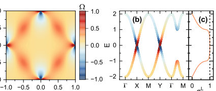
<figcaption class="paper-figure-caption"><b>Fig 3.</b> FIG. 3. (a) Berry curvature Ωdistribution of the lower band of Eq. (2) in the Brillouin zone. (b) Band structure plotted along high-symmetry lines, with the Berry curvature encoded by the color scale, using the same color bar as in panel (a). (c) Linear-response Hall conductivity σL xy, obtained by integrating the Berry curvature of all occupied states below the Fermi energy, as a function of the Fermi energy, in units of e2/h.</figcaption>
</figure>
<figure class="paper-figure-card">
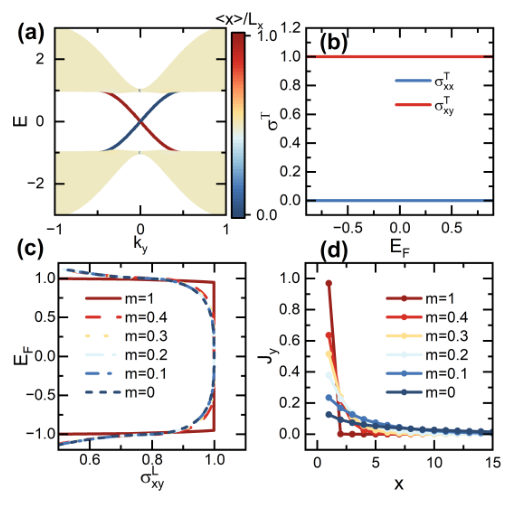
<figcaption class="paper-figure-caption"><b>Fig 4.</b> FIG. 4. (a) Band structure of the insulating QAH nanorib- bon with the mass m = 1. This nanoribbon has a width in the x-direction Lx = 100 and is of infinite extent in the y-direction. (b) The longitudinal σT xx and Hall σT xy conduc- tivities calculated by the transport simulations, with the unit of e2/h and Γd = 0. In (a) and (b), m = 1. (c) Linear- response Hall conductivity σL xy for different m, obtained by integrating the Berry curvature of all occupied states below the Fermi energy EF , as a function of the Fermi energy, in units of e2/h. (d) Distribution of the y-direction equilibrium current along the x position of a nanoribbon, whose width in the x-direction is Lx = 50. Here, we...</figcaption>
</figure>
<figure class="paper-figure-card">
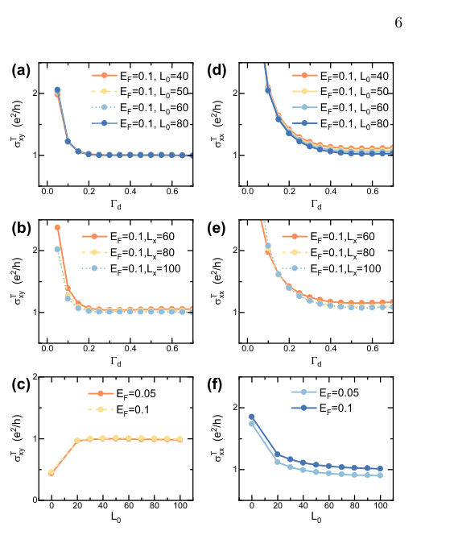
<figcaption class="paper-figure-caption"><b>Fig 5.</b> FIG. 5. (a) the Hall conductivity σT xy vs. the dephasing strength Γd, with four different L0 and EF = 0.1. (b) σT xy vs. Γd, with three different Lx and EF = 0.1. (c) σT xy vs. L0, with Γd = 0.5 and EF = 0.05, 0.1. (d), (e), and (f) the corresponding longitudinal conductivity σT xx. As shown in Fig. 2(a) of the manuscript, Lx is the width of the Hall bar, L0 is the space between voltage probes, controlling the length of the Hall bar. Other parameters are the same as Fig. 2.</figcaption>
</figure>
</div>

<p><strong>Summary.</strong> This paper demonstrates that the Quantum Anomalous Hall effect is not restricted to insulators and can exist in chiral semimetals. It shows that while the Hall response remains quantized, the longitudinal conductivity stays finite, creating a unique 'dual-channel' transport regime. This discovery extends the fundamental understanding of topological transport in gapless systems.</p>
<p><strong>Why it may be interesting.</strong> not directly relevant</p>
<details>
<summary>Detailed structure</summary>
<p><strong>Main problem.</strong> Investigating whether the Quantum Anomalous Hall (QAH) effect can persist in chiral semimetals where conduction and valence bands touch at zero energy, and identifying its unique transport signatures.</p>
<p><strong>Main result.</strong> The Hall conductivity remains quantized even in the semimetallic regime due to the cancellation of Berry curvature at specific valleys, while the longitudinal conductivity remains finite and exhibits semimetallic behavior.</p>
<p><strong>Method.</strong> Nonequilibrium Green's function (NEGF) calculations using a six-terminal Hall bar geometry and Büttiker virtual leads to simulate dephasing.</p>
<p><strong>Model / system.</strong> A 2D chiral semimetal described by a two-band tight-binding model on a square lattice, featuring massive Dirac fermions at Gamma and M points and gapless cones at X and Y points.</p>
<p><strong>Key observables.</strong> Hall conductivity (sigma_xy), longitudinal conductivity (sigma_xx), Hall resistivity (rho_xy), and equilibrium current density (Jy).</p>
<p><strong>Important parameters / regimes.</strong> Fermi energy (Ef), dephasing strength (Gamma_d), mass term (m), and device dimensions (Lx, Ly).</p>
<p><strong>Assumptions / limitations.</strong> The system is modeled using a clean tight-binding Hamiltonian with dephasing introduced via virtual leads to simulate realistic experimental conditions.</p>
<p><strong>Figures summary.</strong> Fig 1 shows the 2D band structure and nanoribbon spatial distribution; Fig 2 displays the Hall bar setup and transport results (sigma_xx, sigma_xy vs Ef); Fig 4 shows the Hall response and current decay; Fig 5 analyzes the dependence of conductivities on dephasing, device size, and probe distance.</p>
<p><strong>Paper structure.</strong> The paper introduces the problem of QAH in semimetals, presents the tight-binding model and band structure, details the NEGF transport simulation setup, analyzes the quantization and semimetallic signatures, explores the semimetal-to-insulator transition, and discusses the role of dephasing and device geometry.</p>
</details>
<details>
<summary>Abstract</summary>
<p>The quantum anomalous Hall (QAH) effect is conventionally understood to exist only in Chern insulators, while a recent study has shown that ferromagnetic metals can also host the QAH effect. Between insulators and metals, we demonstrate that QAH can persist even in a chiral semimetal, where conduction and valence bands touch at zero energy. Transport calculations demonstrate that the Hall conductivity of such a system can be quantized in the presence of dephasing. Interestingly, its longitudinal conductivity remains finite and exhibits semimetallic behavior, in contrast to Chern insulators. This unusual transport behavior originates from the quantization of the Berry curvature integral over occupied states and the semimetallic band structure. This chiral semimetal can transition into a Chern insulator, accompanied by the vanishing of longitudinal conductivity and a reduction of the intrinsic length scale of the Hall response. Our results extend the concept of QAH and uncover the semimetallic QAH transport signatures.</p>
</details>
<p><sub><a href="#top">↑ back to top</a></sub></p>

<p><a id="paper-2605.28250"></a></p>
<h3 id="taming-quantum-interference-a-route-to-high-electrical-conductance-in-carbon-nanotube-assemblies"><a href="http://arxiv.org/abs/2605.28250v1">Taming quantum interference: a route to high electrical conductance in carbon nanotube assemblies</a></h3>
<p><strong>Authors:</strong> Teresa Kulka, Agnieszka E. Lekawa-Raus, John S. Bulmer, Krzysztof Koziol, Fedor F. Balakirev, Irina V. Lebedeva, Jacek A. Majewski, Magdalena Marganska, Karolina Z. Milowska<br>
<strong>Type:</strong> both · <strong>Category:</strong> other · <strong>PDF:</strong> <a href="https://arxiv.org/pdf/2605.28250v1">https://arxiv.org/pdf/2605.28250v1</a><br>
<strong>Analysis basis:</strong> full PDF text, analyzed in chunks
<strong>Topic relevance:</strong> <code>non-equilibrium dynamics</code> <strong>2/5</strong></p>
<div class="figure-strip-hint">↔ Scroll figures horizontally</div>
<div class="paper-figures-scroll">
<figure class="paper-figure-card">
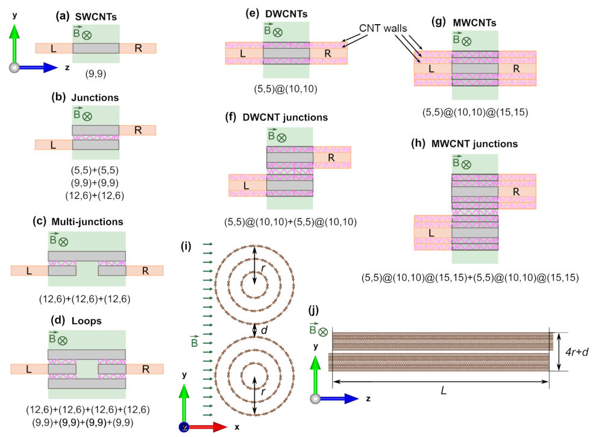
<figcaption class="paper-figure-caption"><b>Fig 1.</b> Figure 1: Models of CNTs and CNT junction architectures considered in this work, with the chiralities of the constituent CNTs listed below. Isolated CNT building blocks are shown for (a) SWCNT, (e) DWCNT and (g) TWCNT, with the corresponding junction architectures used in the calculations shown in (b–d), (f) and (h). The pink zig-zag lines schematically indicate possible electron tunnelling paths between neighbouring SWCNTs, or between adjacent walls in MWCNTs. i) Cross-sectional and (j) side views of the MWCNT junction with the radius r, intertube distance d, and overlap length L marked.</figcaption>
</figure>
<figure class="paper-figure-card">
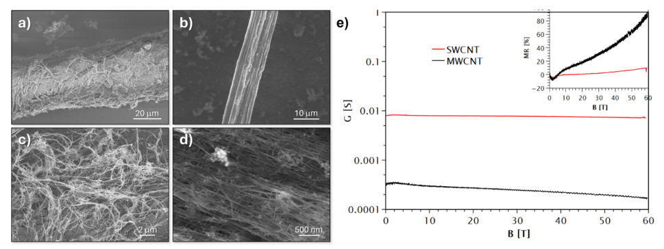
<figcaption class="paper-figure-caption"><b>Fig 2.</b> Figure 2: Morphology and magnetotransport of SWCNT and MWCNT fibres. (a-d) SEM images of CNT fibres directly spun from the FC-CVD reactor. (a) The SWCNT-based fibre and (b) a fibre made of a mixture of MWCNTs of different numbers of walls. Corresponding higher-magnification images highlight the alignment of individual (c) SWCNTs and (d) MWCNTs within the fibres. (e) Change in conductance of a 3 mm long MWCNT fibre sample against a magnetic field measured at 1.495K. Previously reported data [17] for SWCNT fibre (3 mm-long) measured at 1.3 K are included for comparison. The inset shows magnetoresistance MR [%] as a function of magnetic field for both samples.</figcaption>
</figure>
<figure class="paper-figure-card">
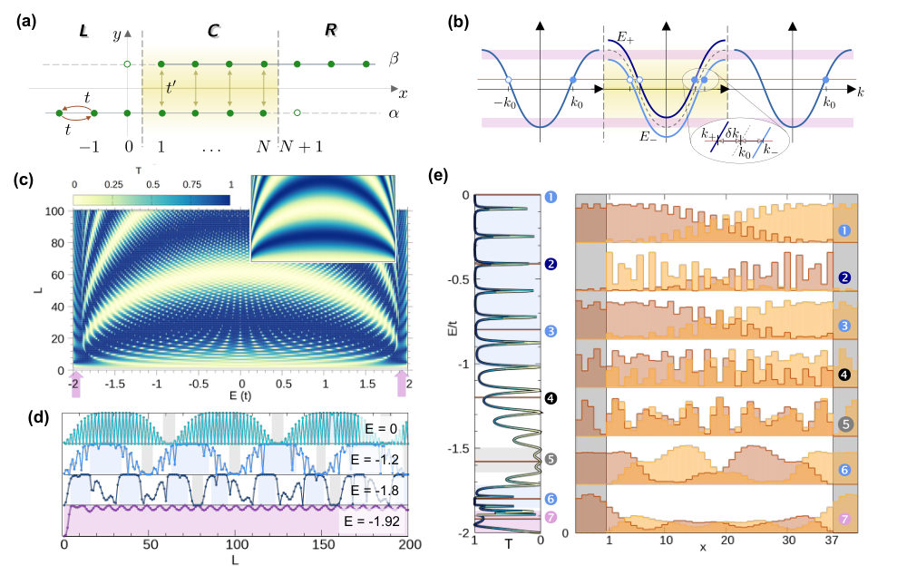
<figcaption class="paper-figure-caption"><b>Fig 3.</b> Figure 3: Transmission and transport regimes in overlapping atomic chains. (a) Sketch of the system, with t the hopping integral along each chain and t′ the hopping between chains α and β. (b) The energy bands of the individual chains and the two hybridized bands E± in the central region. The circles mark the incoming (k0), reflected (−k0) and transmitted (k0 in R) momenta at a given energy, as well as the ±k± at this energy in the junction. The light violet stripes mark the range of the gateway states (see text for description of the transport regimes). (c) Numerically calculated T(E, L) – transmission through the junction, as a function of energy E and junction length L. The fine...</figcaption>
</figure>
<figure class="paper-figure-card">
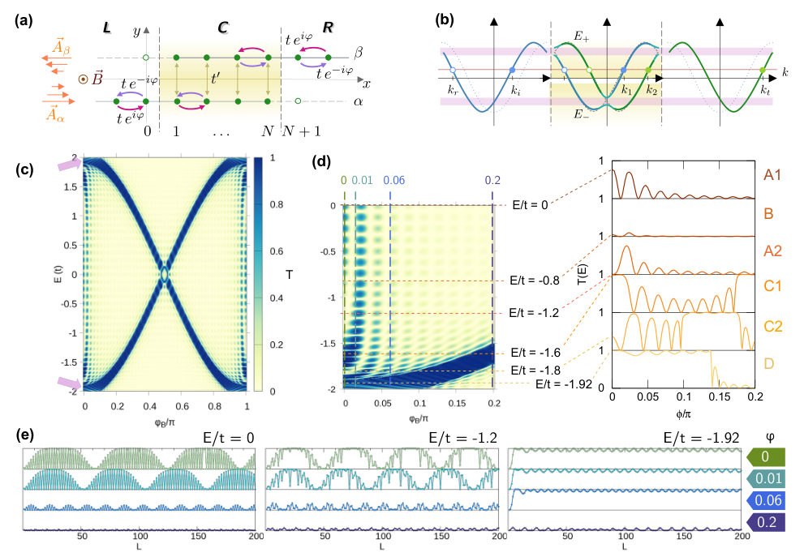
<figcaption class="paper-figure-caption"><b>Fig 4.</b> Figure 4: Transport across an atomic chain junction in perpendicular magnetic field. (a) Sketch of the system with the orientation of ⃗B and the vector potential ⃗A(y). Hopping integrals along x are modified by the Peierls phase, opposite on chains α and β. (b) The electronic bands are shifted by the Peierls phase, +φ on chain α and −φ on chain β. In the junction the shifted bands cross only at k = 0, π, and only in the neighborhood of these points the electronic states of the two chains can hybridize. These energy ranges are also those where transport is facilitated by gateway states, and with increasing ⃗B they shift towards E = 0. (c) Numerically calculated T(E, φ) for a junction with 49...</figcaption>
</figure>
<figure class="paper-figure-card">
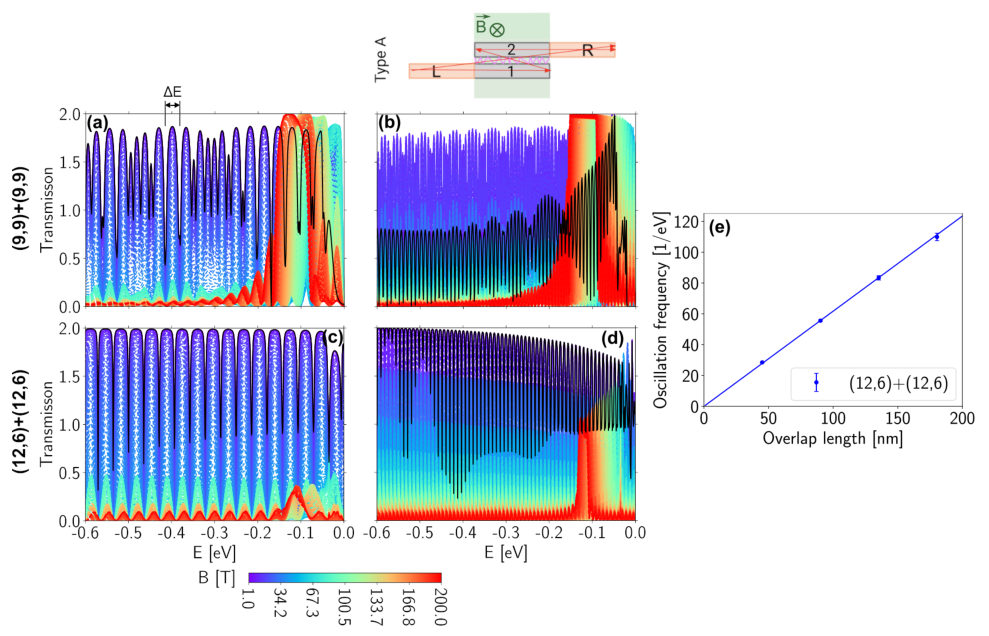
<figcaption class="paper-figure-caption"><b>Fig 5.</b> Figure 5: Electron transport through simple junctions of single-walled CNTs (type A systems) under an external perpendicular magnetic field. The junction schematics above the panels show some of the possible electron paths (red arrows). (a–d) Oscillations of the computed zero-bias transmission as a function of electron energy E for (9,9)+(9,9) SWCNT junctions with overlap lengths of (a) 49.19 nm (200 unit cells) and (b) 196.76 nm (800 unit cells), and for (12,6)+(12,6) SWCNT junctions with overlap lengths of (c) 45.08 nm (40 unit cells) and (d) 180.33 nm (160 unit cells), shown for magnetic fields B up to 200 T in the energy window [-0.6,0] eV. (e) Transmission oscillation frequency,...</figcaption>
</figure>
</div>

<p><strong>Summary.</strong> This paper investigates how quantum interference at the junctions between carbon nanotubes affects the overall electrical conductivity of nanotube networks. By combining atomistic simulations with high-field experiments, the authors show that complex multi-walled structures can suffer from interference-induced conductance suppression, providing a blueprint for designing more stable and conductive CNT-based electronics.</p>
<p><strong>Why it may be interesting.</strong> not directly relevant</p>
<details>
<summary>Detailed structure</summary>
<p><strong>Main problem.</strong> Understanding and controlling quantum interference at inter-nanotube junctions to achieve high electrical conductance and field stability in carbon nanotube (CNT) assemblies.</p>
<p><strong>Main result.</strong> The study identifies that multi-walled CNT architectures introduce complex, field-sensitive interference that reduces conductance, whereas SWCNT junctions can be tuned via overlap length and magnetic fields to achieve high-transmission 'gateway' states.</p>
<p><strong>Method.</strong> The work combines atomistic tight-binding non-equilibrium Green's-function (NEGF) simulations and analytical waveguide models with experimental magnetotransport measurements on CNT fibers using pulsed magnetic fields up to 60 T.</p>
<p><strong>Model / system.</strong> The physical systems include SWCNT, DWCNT, and TWCNT junctions and fibers. Theoretical models include an atomistic tight-binding Hamiltonian with Peierls substitution for magnetic fields and a minimal 1D atomic chain model.</p>
<p><strong>Key observables.</strong> Electrical conductance (G), specific conductivity (normalized by linear density), magnetoresistance (MR), and transmission amplitude (T).</p>
<p><strong>Important parameters / regimes.</strong> Nanotube diameter, chirality, overlap length, doping, perpendicular magnetic field strength, and inter-tube coupling.</p>
<p><strong>Assumptions / limitations.</strong> Assumes current injection is primarily through outer shells in MWCNTs; neglects inelastic processes like electron-phonon scattering; assumes magnetic fields are present only in the scattering region.</p>
<p><strong>Figures summary.</strong> Figures illustrate junction architectures (SWCNT, DWCNT, TWCNT), transport regimes in atomic chains (standing waves, gateway states), and transmission maps/spectra as a function of energy and magnetic field.</p>
<p><strong>Paper structure.</strong> The paper introduces the problem of junction-governed transport, presents theoretical models (atomic chains and waveguide analogy), details the atomistic NEGF simulations, compares these to experimental magnetotransport data in CNT fibers, and concludes with design principles for high-conductance conductors.</p>
</details>
<details>
<summary>Abstract</summary>
<p>Miniaturized electronics require lightweight conductors that maintain high conductance under demanding conditions. CNT networks are promising candidates, but their transport is governed by inter-nanotube junctions where electron waves interfere. Controlling this interference requires understanding how junction architecture shapes transmission. We explore coherent transport through experimentally relevant junctions, from single and multiple single-walled CNT (SWCNT) contacts to double-walled CNT (DWCNT) and triple-walled CNT (TWCNT) junctions, with atomistic tight-binding non-equilibrium Green's-function calculations, also under a perpendicular magnetic field. We use analytically solvable minimal models to identify transport regimes expected for quasi-1D nanoscale junctions, and an electron-waveguide picture to interpret their CNT-specific manifestations. For single SWCNT--SWCNT junctions, high-transmission windows are set mainly by overlap length, doping and magnetic field. Gateway states can enhance conductance when some CNT subbands are gapped, and in some cases a magnetic field can restore transmission by lifting an interference blockade. In more complex architectures, added paths become selective: multi-junctions generate resonant filtering, while additional walls redistribute transmission instead of acting as independent channels. DWCNT junctions remain outer-wall dominated and SWCNT-like, whereas TWCNT junctions become genuinely multi-channel and more field-sensitive. This explains the lower, more field-sensitive conductance of multi-walled CNT (MWCNT) fibres, in accord with our ultrahigh-field measurements on SWCNT and MWCNT fibres. Ultimately, this work turns microscopic interference mechanisms into design principles for high-conductance, field-stable CNT conductors.</p>
</details>
<p><sub><a href="#top">↑ back to top</a></sub></p>
<h3 id="other-secondary-papers-8">Other secondary papers (8)</h3>
<details>
<summary>Show other secondary papers</summary>

<p><a id="paper-2605.28800"></a></p>
<h3 id="a-gpu-based-solver-for-polarization-dynamics-in-ferroelectric-materials"><a href="http://arxiv.org/abs/2605.28800v1">A GPU-based Solver for Polarization Dynamics in Ferroelectric Materials</a></h3>
<p><strong>Authors:</strong> Ali Hasan, Edoardo Piccolo, Anna Giordano, Natalya Fedorova, Jorge Íñiguez-González, Davi Rodrigues, Giovanni Finocchio<br>
<strong>Type:</strong> theory · <strong>Category:</strong> numerical methods · <strong>PDF:</strong> <a href="https://arxiv.org/pdf/2605.28800v1">https://arxiv.org/pdf/2605.28800v1</a><br>
<strong>Analysis basis:</strong> full PDF text, analyzed in chunks</p>
<div class="figure-strip-hint">↔ Scroll figures horizontally</div>
<div class="paper-figures-scroll">
<figure class="paper-figure-card">
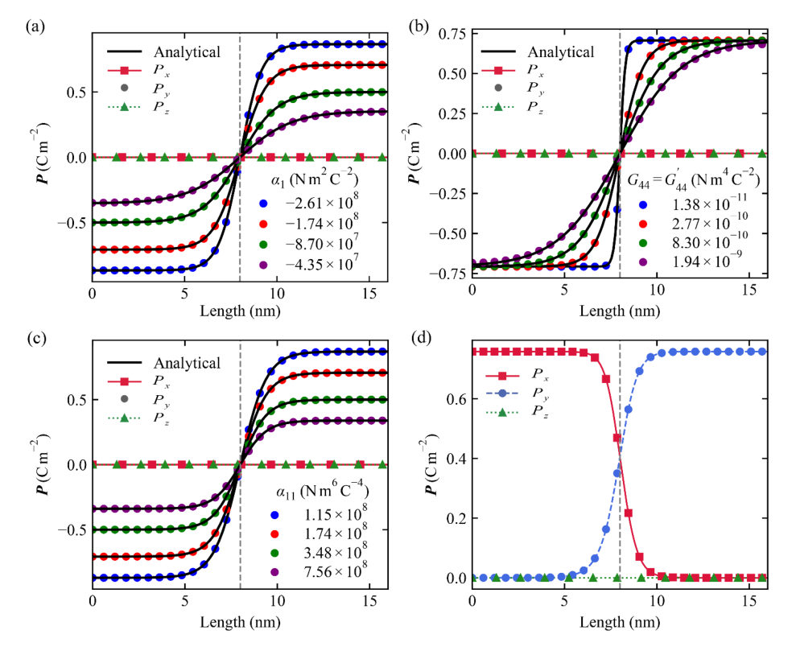
<figcaption class="paper-figure-caption"><b>Fig 1.</b> Figure 1. Polarization profiles across ferroelectric domain walls and the influence of Landau and gradient energy parameters. (a) Polarization profiles of 180° domain walls along the wall-normal direction, illustrating the effect of varying the Landau coefficient 𝛼1. (b) Effect of varying the gradient constants 𝐺44 = 𝐺44</figcaption>
</figure>
<figure class="paper-figure-card">
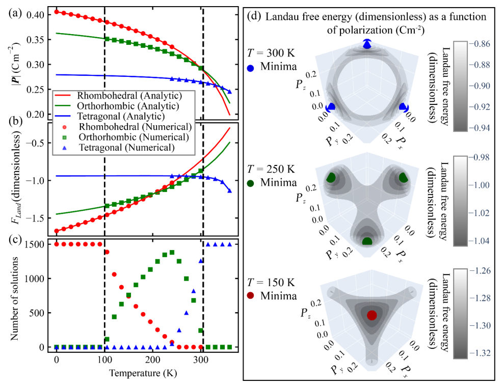
<figcaption class="paper-figure-caption"><b>Fig 2.</b> Figure 2. Temperature dependence of (a) polarization magnitude P and (b) Landau free energy 𝐹𝐿𝑎𝑛𝑑 and (c) number of solutions in each phase. Panel (d) presents three-dimensional visualizations of the global minima of the Landau free energy surface at representative temperatures (300 K, 250 K, and 150 K), evaluated over the first-octant polarization space ranging from (0.0, 0.0, 0.0) to (0.27, 0.27, 0.27) C m⁻². Gray surfaces indicate isoenergetic contours.</figcaption>
</figure>
<figure class="paper-figure-card">
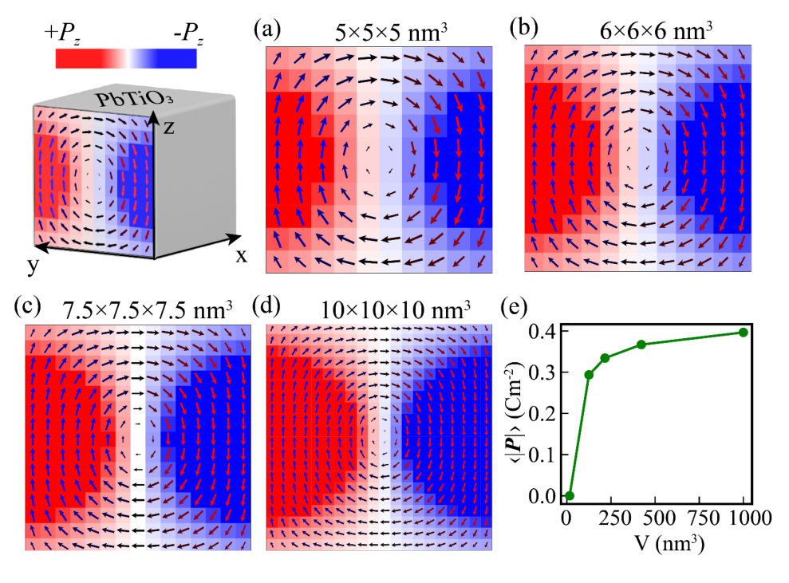
<figcaption class="paper-figure-caption"><b>Fig 3.</b> Figure 3. (a) scheme of the PbTiO₃ sample considered. (b)-(d) we show the cross section of the yz plane at the</figcaption>
</figure>
<figure class="paper-figure-card">

<figcaption class="paper-figure-caption"><b>Fig 4.</b> Figure 3. (a) (P–E) hysteresis loops of the PbTiO3/SrTiO3 bilayer calculated under various external field frequencies, together with the static loop obtained by sweeping a DC external field back and forth in the field region approximately -400 to 400 MV/m. (b) The domain structure showing switching from −⟨𝑃𝑧⟩ to +⟨𝑃𝑧⟩ for an AC-field frequency 0.0017 MHz. (c) Corresponding hysteresis energy as a function of the applied AC- field frequency; (d) Time evolution of the out-of-plane polarization 𝑃𝑧 and the applied external field 𝑬𝐸𝑥𝑡 for the highest frequency considered 0.1740 MHz.</figcaption>
</figure>
<figure class="paper-figure-card">
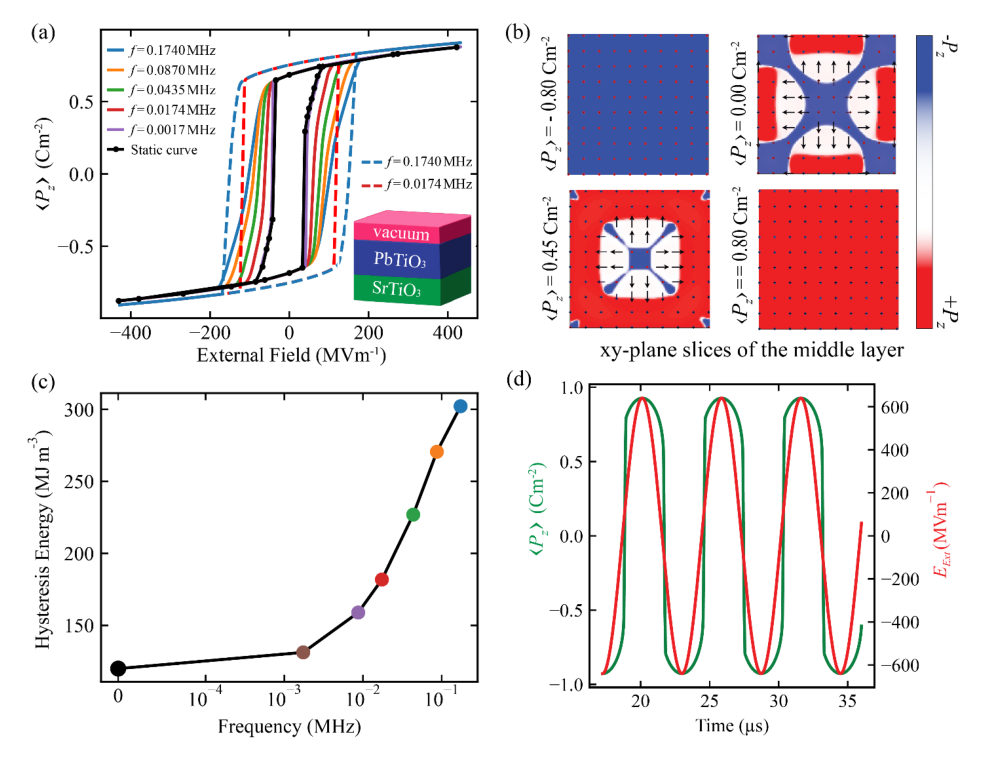
<figcaption class="paper-figure-caption"><b>Fig 5.</b> Figure 3(a) shows the P–E hysteresis loops of the PbTiO3/SrTiO3 for different frequency of the external</figcaption>
</figure>
</div>
<p><strong>Summary.</strong> This paper introduces a new GPU-accelerated numerical solver, PETASPIN_microelectrics, designed for large-scale, high-fidelity simulations of 3D polarization dynamics in ferroelectric materials. It overcomes the limitations of previous CPU-based and uniaxial models, enabling the study of complex topological textures like skyrmions and frequency-dependent hysteresis. This tool is essential for the predictive design of next-generation ferroelectric devices.</p>
<p><strong>Why it may be interesting.</strong> not directly relevant</p>
<details>
<summary>Detailed structure</summary>
<p><strong>Main problem.</strong> Existing CPU-based ferroelectric solvers are computationally expensive for large-scale 3D simulations and often rely on simplified uniaxial models that cannot capture complex 3D structures like polarization rotation or topological textures.</p>
<p><strong>Main result.</strong> The development of PETASPIN_microelectrics, a fully GPU-acceler_rated, scalable solver that accurately reproduces temperature-driven phase transitions in BaTiO3 and demonstrates the stabilization of 3D hybrid skyrmions in PbTiO3/SrTiO3 bilayers.</p>
<p><strong>Method.</strong> A GPU-native phase-field approach using CUDA C/C++ and the Thrust library, employing the finite-difference method and NVIDIA's CUDA FFT library to solve the time-dependent Ginzburg-Landau equations.</p>
<p><strong>Model / system.</strong> The model uses the Time-Dependent Ginzburg-Landau (TDGL) formalism applied to perovskite oxides like BaTiO3, PbTiO3, and SrTiO3, incorporating Landau, gradient, and electrostatic energy contributions.</p>
<p><strong>Key observables.</strong> Polarization vector field (magnitude and rotation), domain wall profiles, hysteresis loops, electrostatic fields, and topological textures (skyrmions/vortices).</p>
<p><strong>Important parameters / regimes.</strong> Temperature (0-360 K), external electric field frequency, epitaxial strain parameter (rs), Landau and gradient coefficients, and background permittivity.</p>
<p><strong>Assumptions / limitations.</strong> The system is modeled using the TDGL formalism; finite samples are assumed to be embedded in vacuum (P=0 outside); the Landau expansion is applied to prototypical perovskites.</p>
<p><strong>Figures summary.</strong> Figure 1 shows the effect of Landau coefficients on 180-degree domain wall profiles; Figure 3(b) illustrates the transition from vortex tubes to stabilized skyrmions via strain tuning.</p>
<p><strong>Paper structure.</strong> The paper introduces the computational bottleneck of existing solvers, presents the architecture and implementation of the new GPU solver, validates the solver against analytical domain wall profiles and phase transitions, and demonstrates advanced applications in strain-controlled skyrmion stabilization.</p>
</details>
<details>
<summary>Abstract</summary>
<p>Ferroelectric materials can be used for the development of multiple device concepts combining non-volatility, small dimensions, low-power actuation, and electrical tunability. Such development demands efficient and precise design of simulation tools describing the polarization texture. However, most existing ferroelectric solvers are CPU-based and rely on simplified electrostatic treatments and reduced-dimensional representations of the polarization field. These approximations limit their ability to capture finite-size and boundary effects and restrict the range of domain structures and domain walls that can be realistically simulated. Here, we present a fully GPU (graphics processing units)-accelerated and scalable numerical solver, named PETASPIN_microelectrics, for computing the full polarization vector field of ferroelectric systems using the Ginzburg-Landau formalism. Our solver incorporates an optimized and validated calculation of the full electrostatic field and enables the parallel execution of multiple simulations. We systematically validated the solver with several benchmark problems, including phase transitions in BaTiO3 and ferroelectric domain wall profiles. Our simulations reproduce temperature-driven hysteretic phase transitions in BaTiO3. We also reproduce hysteresis loops and demonstrate stabilization of a three-dimensional hybrid skyrmion in a PbTiO3/SrTiO3 bilayer system. Our results show quantitative agreement with predictions from an analytical theory and prior experimental studies. The proposed solver provides an efficient, accurate platform for large-scale simulations of ferroelectric materials including stabilization of topological textures supporting predictive modeling for next-generation of ferroelectric device design.</p>
</details>
<p><sub><a href="#top">↑ back to top</a></sub></p>

<p><a id="paper-2605.28759"></a></p>
<h3 id="absolute-measurement-of-penetration-depth-of-superconducting-thin-films-using-microwave-stripline-resonators"><a href="http://arxiv.org/abs/2605.28759v1">Absolute measurement of penetration depth of superconducting thin films using microwave stripline resonators</a></h3>
<p><strong>Authors:</strong> Arghya Dutta, Ajeet Salunke, Mahesh Poojary, Vivas Bagwe, Sangita Bose, Pratap Raychaudhuri<br>
<strong>Type:</strong> both · <strong>Category:</strong> other · <strong>PDF:</strong> <a href="https://arxiv.org/pdf/2605.28759v1">https://arxiv.org/pdf/2605.28759v1</a><br>
<strong>Analysis basis:</strong> full PDF text, analyzed in chunks</p>
<div class="figure-strip-hint">↔ Scroll figures horizontally</div>
<div class="paper-figures-scroll">
<figure class="paper-figure-card">
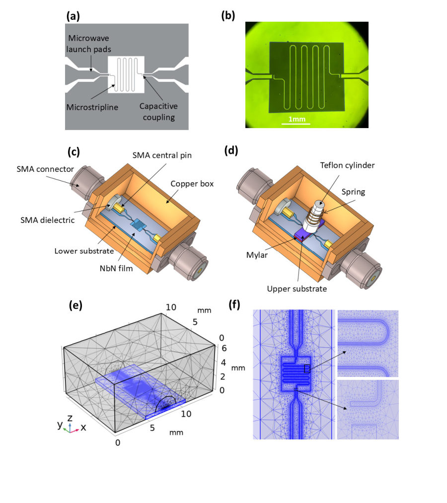
<figcaption class="paper-figure-caption"><b>Fig 1.</b> Figure 1. (a) Schematic of the microstrip resonator device and (b) optical image of a device made from a 60 nm thick NbN film. The meander is located inside a rectangular box patterned on the ground plane. Experimental configuration of (c) a bare NbN microstrip resonator mounted in a sample box and (d) a where another superconducting film is mounted upside-down on NbN microstrip resonator with a 25 µm Mylar spacer in between in a flip-film geometry; the central pin of the SMA connector is soldered on the launching pad of the device. The top and front surfaces of the box are hidden. (e) The mesh used for electromagnetic simulations; (f) expanded view of the mesh close to the microstrip and...</figcaption>
</figure>
<figure class="paper-figure-card">
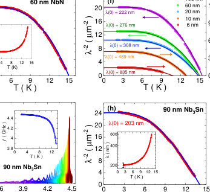
<figcaption class="paper-figure-caption"><b>Fig 2.</b> Figure 2. (a) Measured transmission coefficient || as a function of frequency for a microstrip resonator made from 60 nm thick NbN film at 2.2 K. The sharp peaks labelled , ,  and  are the resonant frequencies of the microstrip. The broad shaded features are parasitic resonances from the sample box. (b) Expanded view of || and the phase across the fundamental resonance peak ; the solid line is a fit of || with eqn. (1). The inset shows the calculated values of  as a function of λ of the superconductor; the star shows the point corresponding to the experimental resonant frequency. (c) Experimental and calculated values of  − as a function of mode number. The electric...</figcaption>
</figure>
<figure class="paper-figure-card">
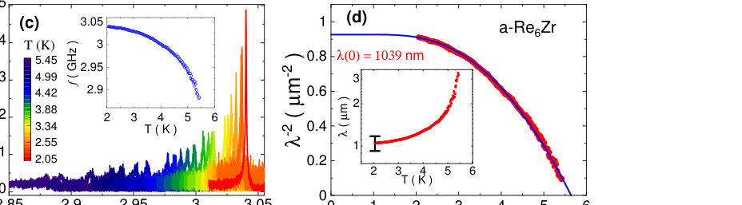
<figcaption class="paper-figure-caption"><b>Fig 3.</b> Figure 3. (a) Measured transmission coefficient || at 2.1 K around the fundamental resonance peak in three configurations: (i) a bare NbN (thickness: 60 nm) microstrip resonator (black), (ii) with a 25 µm Mylar spacer layer placed on the microstrip (red), and (iii) with a 28 nm thick a-Re6Zr film placed upside-down on the Mylar sheet in flip-film geometry. (b) Calculated resonant frequency in configuration (ii) as a function of  of the spacer layer (red), and in configuration (iii) as a function of λ of a-Re6Zr. The red and green stars are the points that correspond to the experimental resonant frequencies in configurations (ii) and (iii) respectively. (c) || at different...</figcaption>
</figure>
<figure class="paper-figure-card">
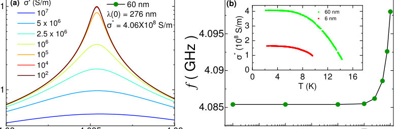
<figcaption class="paper-figure-caption"><b>Fig 4.</b> Figure 5. (a) Simulated transmission coefficient || as a function of frequency for the fundamental frequency of a bare microstrip resonator for different values of ′. ′′ is fixed to the value corresponding to the 60 nm thick NbN</figcaption>
</figure>
<figure class="paper-figure-card">
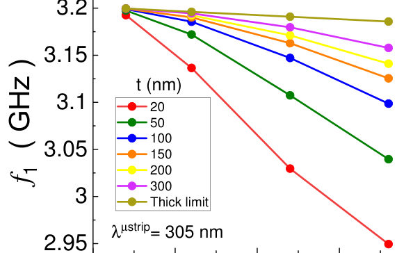
<figcaption class="paper-figure-caption"><b>Fig 5.</b> Figure 6. Calculated f1 as a function of !&quot;#$%&amp; for flip-film geometry. Different curves correspond to</figcaption>
</figure>
</div>
<p><strong>Summary.</strong> This paper presents a new hybrid method to precisely measure the absolute superconducting penetration depth in thin films. By combining microwave resonator experiments with 3D electromagnetic simulations, the authors overcome the limitations of traditional model-dependent analytical methods. The technique is successfully demonstrated on both NbN and a-Re6Zr films, including very thin films using a unique flip-film geometry.</p>
<p><strong>Why it may be interesting.</strong> not directly relevant</p>
<details>
<summary>Detailed structure</summary>
<p><strong>Main problem.</strong> The difficulty of determining the absolute value of the superconducting magnetic penetration depth (lambda) from microwave resonator measurements due to model dependencies and complex geometric factors.</p>
<p><strong>Main result.</strong> The development of a hybrid method combining microwave measurements with COMSOL Multiphysics simulations to accurately extract absolute penetration depth and superconducting gap values for NbN and a-Re6Zr films.</p>
<p><strong>Method.</strong> A hybrid approach using finite-element electromagnetic simulations (COMSOL) to create look-up tables of resonant frequencies, which are then matched to experimental transmission (S12) data from microstrip resonators.</p>
<p><strong>Model / system.</strong> Superconducting microstrip (stripline) resonators made of NbN and Nb3Sn thin films on MgO substrates, including a 'flip-film' geometry where a secondary sample is placed above the resonator using a Mylar dielectric spacer.</p>
<p><strong>Key observables.</strong> Resonant frequency (fn), transmission coefficient (|S12|), phase shift, and loaded quality factor (QL).</p>
<p><strong>Important parameters / regimes.</strong> Magnetic penetration depth (lambda), kinetic inductance (Lk), superconducting energy gap (Delta), film thickness (t), and temperature (T).</p>
<p><strong>Assumptions / limitations.</strong> Gold-plated copper box surfaces are treated as perfect conductors; the thickness and penetration depth of the primary microstrip are assumed to be fixed for certain calculations; neglect of temperature variation of the resonator lambda in specific variants.</p>
<p><strong>Figures summary.</strong> Fig 1: Device geometry and experimental setup (bare and flip-film). Fig 2: Transmission spectra, frequency vs mode number, and temperature dependence of 1/lambda^2 for NbN. Fig 3: Frequency shifts in flip-film configuration and simulated frequency vs lambda. Fig 4: Transmission and extracted lambda for 6 nm NbN. Fig 5/6: Simulated transmission and frequency dependence on conductivity and thickness.</p>
<p><strong>Paper structure.</strong> Introduction of the problem (absolute lambda measurement) -&gt; Description of the microstrip resonator and flip-film experimental setup -&gt; Presentation of the hybrid simulation-measurement method -&gt; Validation using NbN films -&gt; Extension and application to a-Re6Zr via flip-film geometry -&gt; Discussion of thickness regimes and error analysis.</p>
</details>
<details>
<summary>Abstract</summary>
<p>Superconducting microstrip resonators, which leverage kinetic inductance to probe electrodynamics, are sensitive tools for studying superconducting thin films at microwave frequencies. However, extracting the absolute superconducting penetration depth from these measurements remains challenging. In this work, we present a hybrid method to determine the absolute value of penetration depth over a wide temperature range by combining resonator measurements with finite-element electromagnetic simulations in COMSOL Multiphysics. We demonstrate this approach by extracting the penetration depth of NbN films by fabricating resonators from films of various thicknesses. Furthermore, we extend the technique to materials with lower critical temperatures by employing a flip-film geometry. By placing a sample above a NbN resonator, separated by a thin Mylar dielectric, we create a coupled structure where changes in the sample's penetration depth shift the resonant frequency. This non-destructive method provides a reliable, high-sensitivity platform for characterizing the penetration depth of diverse superconducting thin films.</p>
</details>
<p><sub><a href="#top">↑ back to top</a></sub></p>

<p><a id="paper-2605.28790"></a></p>
<h3 id="multiscale-vectorial-determination-of-magnetic-order-parameters-using-electron-magnetic-linear-dichroism"><a href="http://arxiv.org/abs/2605.28790v1">Multiscale Vectorial Determination of Magnetic Order Parameters using Electron Magnetic Linear Dichroism</a></h3>
<p><strong>Authors:</strong> Jan Hajduček, Jáchym Štindl, Ján Rusz, Vojtěch Uhlíř<br>
<strong>Type:</strong> both · <strong>Category:</strong> strongly correlated electrons · <strong>PDF:</strong> <a href="https://arxiv.org/pdf/2605.28790v1">https://arxiv.org/pdf/2605.28790v1</a><br>
<strong>Analysis basis:</strong> full PDF text, analyzed in chunks</p>
<div class="figure-strip-hint">↔ Scroll figures horizontally</div>
<div class="paper-figures-scroll">
<figure class="paper-figure-card">
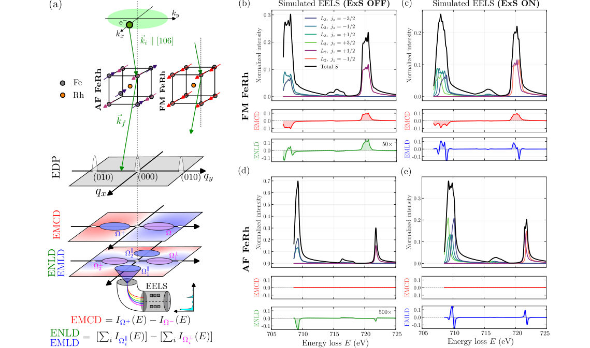
<figcaption class="paper-figure-caption"><b>Fig 1.</b> FIG. 1. Electron Magnetic Dichroism in TEM. (a) Schematic of the EMD scattering geometry with incident electron beam along ⃗ki, slightly tilted from ZA direction, undergoing elastic and inelastic scattering in FeRh. Elastic scattering forms an electron diffraction pattern (ED) with indicated Bragg spots. Energy-filtered intensities IΩ(E) are collected at symmetry- related aperture positions Ω. Spectral differences are obtained by comparing signals from Ω∥and Ω⊥for EMLD/ENLD, and from Ω+ and Ω−for EMCD, which isolates the corresponding dichroic components. Simulated EELS spectra at the Fe L3,2 edges, with color-coded jz-resolved transitions and the integrated spectrum shown in black. Panels...</figcaption>
</figure>
<figure class="paper-figure-card">
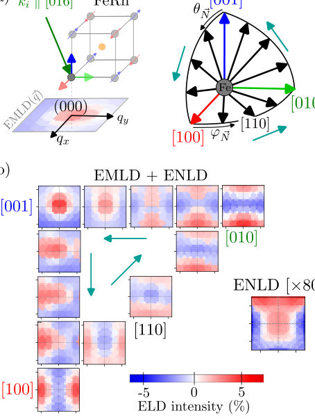
<figcaption class="paper-figure-caption"><b>Fig 2.</b> FIG. 2. Linear dichroic signal dependence on AF spin axis. (a) Schematic of the scattering geometry with indicated Néel vector orientations. (b) Integrated ELD intensity maps in the diffraction plane normalized by the original spectral intensity for a given Néel vector orientation. The signal con- tains both EMLD and ENLD contributions, where the latter acts as a spin-independent background. The signal is evalu- ated at each ⃗q position at the Fe L3 edge in the momentum range of (−0.6, +0.6)G from the (000) Bragg spot.</figcaption>
</figure>
<figure class="paper-figure-card">
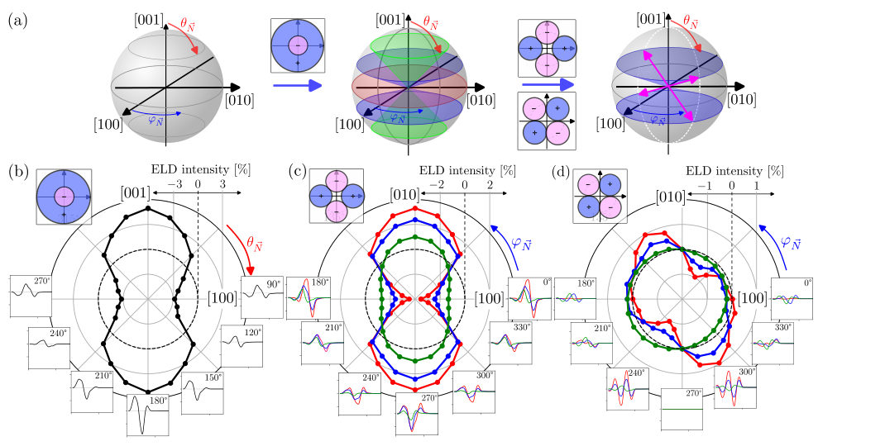
<figcaption class="paper-figure-caption"><b>Fig 3.</b> FIG. 3. EMLD-based vectorial reconstruction of the AF spin axis. (a) Reconstruction scheme for an unknown Néel-vector orientation. EMLD spectra acquired at selected aperture positions progressively constrain the possible spin-axis directions on the orientation sphere, yielding two symmetry-equivalent Néel-vector solutions. (b-d) Simulated EMLD spectral profiles (insets) and corresponding integrated dichroic intensity as a function of θ ⃗ N and φ ⃗ N for representative aperture config- urations. The plots represent the full angular dependence of all possible EMLD responses rather than a single experimental measurement. The dichroic intensities follow a sin2-like harmonic dependence with...</figcaption>
</figure>
<figure class="paper-figure-card">
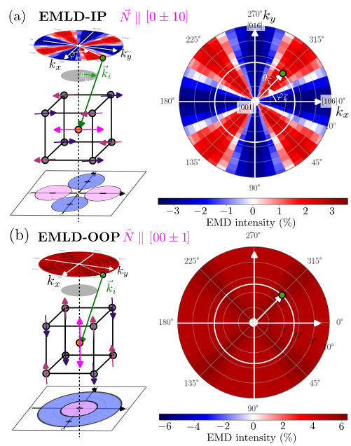
<figcaption class="paper-figure-caption"><b>Fig 4.</b> FIG. 4. Crystal-orientation dependence of the EMLD signal in FeRh. Schematic experimental geometries used to probe the (a) in-plane and (b) out-of-plane components of EMLD. Calculated EMLD signal maps as a function of beam tilt magnitude and azimuth with respect to the [001] zone axis. Color scale encodes the sign and magnitude of the EMLD signal for each incident-beam direction and corre- sponding aperture configuration. Qualitatively similar beam- tilt dependencies of EMLD can be obtained for the FM case.</figcaption>
</figure>
</div>
<p><strong>Summary.</strong> This paper develops a method to use electron magnetic linear dichroism to map the direction of magnetic spins in antiferromagnets at the nanoscale. By using advanced simulations, the authors show that this technique can distinguish magnetic order from crystal anisotropy, providing a powerful tool for studying new magnetic phases like altermagnets.</p>
<p><strong>Why it may be interesting.</strong> not directly relevant</p>
<details>
<summary>Detailed structure</summary>
<p><strong>Main problem.</strong> The challenge of nanoscale vectorial reconstruction of magnetic order parameters, particularly in compensated magnetic phases like antiferromagnets and altermagnets where net magnetization vanishes.</p>
<p><strong>Main result.</strong> Demonstration of Electron Magnetic Linear Dichroism (EMLD) as a quantitative, robust, and scalable probe for determining the magnetic spin axis with nanometer to atomic resolution.</p>
<p><strong>Method.</strong> A unified vectorial simulation framework combining DFT-derived transition matrix elements, Mixed Dynamic Form Factor (MDFF) formalism, and dynamical diffraction theory.</p>
<p><strong>Model / system.</strong> The study focuses on the metamagnetic alloy FeRh, examining both its antiferromagnetic (AF) and ferromagnetic (FM) phases using Transmission Electron Microscopy (TEM) and EELS.</p>
<p><strong>Key observables.</strong> Electron Magnetic Linear Dichroism (EMLD), Electron Magnetic Circular Dichroism (EMCD), and Electron Natural Linear Dichroism (ENLD) signals.</p>
<p><strong>Important parameters / regimes.</strong> Néel vector orientation (polar and azimuthal angles), momentum transfer (q), exchange-splitting energy, and probe convergence angle.</p>
<p><strong>Assumptions / limitations.</strong> The model assumes the absence of valence spin-orbit coupling for the simplified diagonal operator representation and utilizes the dipole approximation.</p>
<p><strong>Figures summary.</strong> Figure 1 shows scattering geometry and simulated EELS spectra for FM/AF phases; Figure 2 illustrates EMLD intensity maps and dependence on the Neel vector; Figure 3 details the reconstruction scheme and angular dependence; Figure 4 shows EMLD maps as a function of beam tilt.</p>
<p><strong>Paper structure.</strong> The paper introduces the problem of magnetic reconstruction, presents a unified vectorial simulation framework, demonstrates the separation of dichroic signals, applies the method to FeRh, and evaluates the scalability and robustness of the EMLD probe.</p>
</details>
<details>
<summary>Abstract</summary>
<p>We demonstrate electron magnetic linear dichroism as a quantitative probe of vectorial magnetic order parameters with nanometer resolution in transmission electron microscopy. Explicit inclusion of vectorial core-level exchange splitting into mixed dynamic form factor simulations accounting for dynamical diffraction enables direct reconstruction of the magnetic spin axis from momentum-resolved electron energy-loss spectra. The resulting dichroic signal is intrinsically separable from nonmagnetic anisotropy, exhibits a well-defined dependence on the Néel vector or magnetization orientation, and remains robust down to the atomic scale. Applied to the collinear antiferromagnetic and ferromagnetic phase of cubic FeRh, this approach allows quantitative real-space mapping of the magnetic vector. These results open a pathway to nanoscale spectroscopy and imaging of antiferromagnets and altermagnets where the generalized approach to electron dichroism provides direct access to different magnetic order parameters.</p>
</details>
<p><sub><a href="#top">↑ back to top</a></sub></p>

<p><a id="paper-2605.28343"></a></p>
<h3 id="sc-1-etching-of-niobium-and-titanium-nitride-thin-films"><a href="http://arxiv.org/abs/2605.28343v1">SC-1 Etching of Niobium and Titanium Nitride Thin Films</a></h3>
<p><strong>Authors:</strong> Adrián Gutiérrez-Cruz, K. A. C. Rathnathilaka, Jani M. Taskinen, Tuomas Vaimala, Kestutis Grigoras, Harshad Mishra, Rishabh Upadhyay, Jorden Senior, Alberto Ronzani<br>
<strong>Type:</strong> experiment · <strong>Category:</strong> other · <strong>PDF:</strong> <a href="https://arxiv.org/pdf/2605.28343v1">https://arxiv.org/pdf/2605.28343v1</a><br>
<strong>Analysis basis:</strong> full PDF text, analyzed in chunks</p>
<div class="figure-strip-hint">↔ Scroll figures horizontally</div>
<div class="paper-figures-scroll">
<figure class="paper-figure-card">
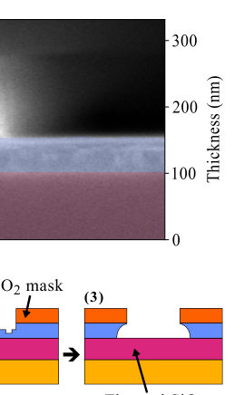
<figcaption class="paper-figure-caption"><b>Fig 1.</b> Figure 1: a) Cross-sectional SEM image of a chip at the edge of a mask opening prior to wet etching, showing the initial layer stack. b) Schematic of the progressive wet etching of a chip against time: (1) before etching, where the metal film is exposed within the SiO2 hard mask mask opening, (2) during etching, where an increase in the metal film roughness is observed, (3) after etching, where the metal film within the mask opening is fully etched and showing a potential overetching of the metal side-walls under the mask.</figcaption>
</figure>
<figure class="paper-figure-card">
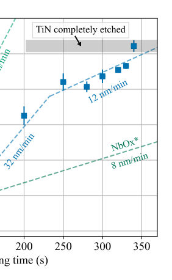
<figcaption class="paper-figure-caption"><b>Fig 2.</b> Figure 2: Etched depths estimated by cross-sectional SEM imaging as a function of etching time for the Nb (green circles) and TiN (blue squares) films. The grey-shaded horizontal areas show each film’s etching endpoint based on its estimated initial thickness. *The 8 nm/min rate is attributed to the NbOx etching, considering the interpretation given in text.</figcaption>
</figure>
<figure class="paper-figure-card">
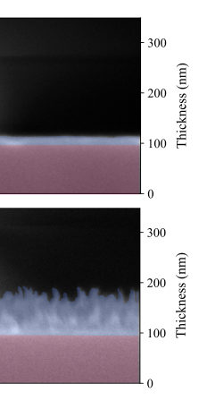
<figcaption class="paper-figure-caption"><b>Fig 3.</b> Figure 3: Cross-sectional SEM images of the etched area from the Nb and TiN films when the etching process is approximately half-way: after 80 s and 150 s for Nb and TiN, respectively.</figcaption>
</figure>
</div>
<p><strong>Summary.</strong> This paper presents a wet etching method using SC-1 solution as a damage-free alternative to dry etching for Nb and TiN thin films. While the process offers high selectivity and avoids plasma damage, the authors highlight challenges such as isotropic undercutting and morphology-dependent etch rates. This work is significant for the fabrication of high-quality superconducting and ferroelectric microelectronic components.</p>
<p><strong>Why it may be interesting.</strong> not directly relevant</p>
<details>
<summary>Detailed structure</summary>
<p><strong>Main problem.</strong> The challenge of patterning Niobium (Nb) and Titanium Nitride (TiN) thin films without the plasma-induced damage and limited selectivity associated with standard dry etching techniques.</p>
<p><strong>Main result.</strong> Demonstration of a highly selective SC-1 wet etching alternative that avoids substrate damage, though it is subject to isotropic undercutting and multi-modal etch rates driven by film morphology.</p>
<p><strong>Method.</strong> Wet etching using SC-1 solution (NH3, H2O2, and H2O) followed by characterization via SEM, AFM, and OpenCV-based image processing for surface area estimation.</p>
<p><strong>Model / system.</strong> Sputtered Nb and TiN thin films on 150 mm Si wafers with a thermally grown SiO2 layer and a PECVD SiO2 hard mask.</p>
<p><strong>Key observables.</strong> Etch rates, film morphology (roughness, grain size, columnar structure), selectivity, and effective surface area increase.</p>
<p><strong>Important parameters / regimes.</strong> Etch temperatures (65C for Nb, 45C for TiN), SC-1 volume ratio (1:1:5), and lateral cavity size due to overetching.</p>
<p><strong>Assumptions / limitations.</strong> The image processing approach assumes that SEM-derived contour measurements accurately represent the effective surface profile; AFM scanning was limited to specific regions to avoid tip damage.</p>
<p><strong>Figures summary.</strong> Figure 1 shows the initial layer stack and the three stages of the etching process; Figure 3 displays cross-sectional SEM of films mid-etch; Figure S4 shows SEM-based contouring and AFM topography for surface area estimation; Figure S5 illustrates lateral cavity growth under the mask during overetching.</p>
<p><strong>Paper structure.</strong> Introduction of the etching problem, description of the SC-1 experimental platform and method, analysis of Nb and TiN etch dynamics and morphology, quantification of surface area changes, and discussion of limitations like mask undercut.</p>
</details>
<details>
<summary>Abstract</summary>
<p>Dry etching techniques, ubiquitous in microelectronics fabrication, often result in challenging levels of undesired collateral plasma-induced damage. In this work, we demonstrate a wet etching alternative for the patterning of niobium (Nb) and titanium nitride (TiN) thin films using the Standard Cleaning 1 (SC-1) solution. We characterize the etching process through its time-evolution dynamics, supported by scanning-electron and atomic force microscopy assessment of the etched film morphology. The results suggest etch dynamics that are linked to native oxides and film microstructure. Overall, the manageable etch rates, the safe operation and the high material selectivity are attractive for practical use in microelectronics fabrication.</p>
</details>
<p><sub><a href="#top">↑ back to top</a></sub></p>

<p><a id="paper-2605.27568"></a></p>
<h3 id="solitonic-construction-of-artificial-neural-networks-from-nonlinear-field-theory"><a href="http://arxiv.org/abs/2605.27568v1">Solitonic Construction of Artificial Neural Networks from Nonlinear Field Theory</a></h3>
<p><strong>Authors:</strong> R. A. C. Correa<br>
<strong>Type:</strong> theory · <strong>Category:</strong> disordered systems and neural networks · <strong>PDF:</strong> <a href="https://arxiv.org/pdf/2605.27568v1">https://arxiv.org/pdf/2605.27568v1</a><br>
<strong>Analysis basis:</strong> full PDF text, analyzed in chunks</p>
<div class="figure-strip-hint">↔ Scroll figures horizontally</div>
<div class="paper-figures-scroll">
<figure class="paper-figure-card">

<figcaption class="paper-figure-caption"><b>Fig 1.</b> FIG. 1. Constructive route from nonlinear field theory to a neural layer. The essential point is the direction of derivation: the neural architecture is not assumed and then relabeled, but obtained after projecting the solitonic sector of the field theory onto collective coordinates and readout variables.</figcaption>
</figure>
<figure class="paper-figure-card">

<figcaption class="paper-figure-caption"><b>Fig 2.</b> FIG. 2. Solitonic activation profiles. The ϕ4 kink gives tanh z directly, while the normalized kink gives the logistic-type response [1 + tanh z]/2. The ReLU curve is shown only as a singular asymmetric limiting response, not as a smooth topological kink.</figcaption>
</figure>
<figure class="paper-figure-card">

<figcaption class="paper-figure-caption"><b>Fig 3.</b> FIG. 3. Schematic solitonic origin of effective weights. For massive fields, the tails of well-separated kinks typically generate exponentially suppressed overlaps. After projection, these overlap scales contribute to the effective coupling matrix and therefore to the neural weights.</figcaption>
</figure>
<figure class="paper-figure-card">

<figcaption class="paper-figure-caption"><b>Fig 4.</b> FIG. 4. Learning as deformation of an effective solitonic potential. The bare collective-coordinate potential contains the intrinsic solitonic sector. A data-dependent term tilts or reshapes this energy, selecting the collective configuration whose readout best matches the supervised target.</figcaption>
</figure>
<figure class="paper-figure-card">

<figcaption class="paper-figure-caption"><b>Fig 5.</b> FIG. 5. Illustrative two-input solitonic readout. The plotted surface represents a projected output ho = σ(2q1 −1.5q2 + 0.8q1q2) generated by linear and bilinear interaction terms in the effective energy. The figure is not a numerical simulation of a specific material platform; it visualizes how solitonic interaction coefficients become neural couplings and nonlinear features.</figcaption>
</figure>
</div>
<p><strong>Summary.</strong> This paper proposes a way to derive the structure of neural networks directly from nonlinear field theory. It shows that neurons, weights, and activation functions can be understood as physical properties of interacting solitons, providing a robust physical foundation for machine learning architectures.</p>
<p><strong>Why it may be interesting.</strong> not directly relevant</p>
<details>
<summary>Detailed structure</summary>
<p><strong>Main problem.</strong> The paper seeks to provide a formal, constructive derivation of artificial neural network (ANN) architectures from the underlying dynamics of nonlinear field theories, moving beyond mere analogy.</p>
<p><strong>Main result.</strong> The author demonstrates that the fundamental components of a neural layer—activation functions, weights, and biases—emerge naturally from the collective-coordinate dynamics and interaction energy of solitons.</p>
<p><strong>Method.</strong> The method involves a collective-coordinate reduction of a nonlinear scalar field theory, using a projection map to extract finite-dimensional computational states from the continuous field configurations.</p>
<p><strong>Model / system.</strong> The primary model is a nonlinear scalar field theory, specifically the phi^4 kink model, focusing on the nonperturbative sector containing stable, localized solitonic solutions.</p>
<p><strong>Key observables.</strong> The neural state (projected collective coordinate), activation function (solitonic response profile), weight matrix (interaction Hessian), and bias (external sources).</p>
<p><strong>Important parameters / regimes.</strong> Mass scale, coupling constant, vacuum value, and the requirement of a separation of scales between internal soliton modes and collective coordinate evolution.</p>
<p><strong>Assumptions / limitations.</strong> The construction assumes a separation of scales between microscopic field fluctuations and mesoscopic soliton dynamics, and is limited to architectures representable as reduced dynamics of localized modes.</p>
<p><strong>Figures summary.</strong> Figure 1 shows the derivation flow from field action to neural layer; Figure 4 illustrates learning as the deformation of an effective potential; Figure 5 shows a 3D plot of a two-input solitonic readout.</p>
<p><strong>Paper structure.</strong> The paper follows a logical progression from the general principle of field reduction to a specific phi^4 kink implementation, followed by the derivation of neural layer components, and concludes with implications for robustness and future architectures.</p>
</details>
<details>
<summary>Abstract</summary>
<p>We present a field-theoretic construction of a class of artificial neural networks from solitonic degrees of freedom in nonlinear scalar field theory. The purpose is not to rename a standard neural layer in the language of solitons, but to start from a continuum action, restrict the theory to a nonperturbative sector containing localized stable solutions, perform a collective-coordinate reduction, and derive the neural layer as the finite-dimensional input-output map of the reduced solitonic dynamics. In this construction, the computational unit is a projected collective coordinate of a localized field configuration rather than an elementary point variable; the activation function is the solitonic response profile or scattering map; the weight matrix is the Hessian or overlap matrix of an effective interaction energy among solitons; the bias is induced by external sources, vacuum asymmetry, or boundary forcing; and depth is a discrete evolution parameter on the solitonic moduli space. We develop the construction explicitly for the \(φ^4\) kink, where the \(\tanh\) activation and the logistic sigmoid arise from the kink profile, and then derive the multilayer feedforward form from an operator-splitting approximation to collective-coordinate gradient flow. We emphasize the novelty criterion: the neural architecture is obtained only after specifying the field action, the solitonic ansatz, the moduli-space metric, the interaction functional, and the projection map. The result is a controlled route from nonlinear field theory to neural-network structure, with robustness tied to the energetic and topological stability of the solitonic sector.</p>
</details>
<p><sub><a href="#top">↑ back to top</a></sub></p>

<p><a id="paper-2605.27822"></a></p>
<h3 id="spin-hall-like-magnon-transport-in-a-synthetic-antiferromagnetic-skyrmion-lattice"><a href="http://arxiv.org/abs/2605.27822v1">Spin-Hall-Like Magnon Transport in a Synthetic Antiferromagnetic Skyrmion Lattice</a></h3>
<p><strong>Authors:</strong> Xingen Zheng, Xuejuan Liu, Zhenyu Wang, Jiyong Kang, Zhixiong Li, Hao Wu<br>
<strong>Type:</strong> theory · <strong>Category:</strong> other · <strong>PDF:</strong> <a href="https://arxiv.org/pdf/2605.27822v1">https://arxiv.org/pdf/2605.27822v1</a><br>
<strong>Analysis basis:</strong> full PDF text, analyzed in chunks</p>
<div class="figure-strip-hint">↔ Scroll figures horizontally</div>
<div class="paper-figures-scroll">
<figure class="paper-figure-card">

<figcaption class="paper-figure-caption"><b>Fig 1.</b> FIG. 1. Bilayer SAF-SkL texture and its bulk magnon spectrum. (a) Spin configuration of the SAF-SkL</figcaption>
</figure>
<figure class="paper-figure-card">

<figcaption class="paper-figure-caption"><b>Fig 2.</b> FIG. 2. Edge states and layer polarization in the SAF-SkL. (a) Strip magnon spectrum colored by the normalized</figcaption>
</figure>
<figure class="paper-figure-card">

<figcaption class="paper-figure-caption"><b>Fig 3.</b> FIG. 4. Schematic analogy between skyrmion-based lattices and Hall-type responses. (a), (b) Conventional</figcaption>
</figure>
</div>
<p><strong>Summary.</strong> This paper explores magnon transport in a bilayer system of coupled skyrmion lattices with opposite textures. It demonstrates that while the system lacks the symmetry for a $Z_2$ topological phase, it successfully hosts layer-polarized, spin-Hall-like edge modes. This provides a new platform for studying bosonic Hall-type transport phenomena.</p>
<p><strong>Why it may be interesting.</strong> not directly relevant</p>
<details>
<summary>Detailed structure</summary>
<p><strong>Main problem.</strong> The study investigates whether a synthetic antiferromagnetic skyrmion lattice (SAF-SkL) can realize a bosonic analogue of the spin-Hall effect and determines if its edge modes are $Z_2$-protected helical states or layer-polarized spin-Hall-like modes.</p>
<p><strong>Main result.</strong> The researchers find that the SAF-SkL supports counterpropagating, layer-polarized edge modes that are not $Z_2$-protected due to the lack of pseudo-time-reversal symmetry, but instead function as 'spin-Hall-like' modes arising from the opposite Hall tendencies of the two layers.</p>
<p><strong>Method.</strong> The study employs linear spin-wave theory using the Holstein-Primakoff transformation to derive a bosonic Bogoliubov-de Gennes Hamiltonian, supplemented by micromagnetic simulations (MuMax3) and symmetry analysis.</p>
<p><strong>Model / system.</strong> A synthetic antiferromagnetic skyrmion lattice (SAF-SkL) consisting of two antiferromagnetically coupled skyrmion lattice layers with opposite magnetic textures, modeled via a spin Hamiltonian including exchange, interlayer coupling, DMI, and anisotropy.</p>
<p><strong>Key observables.</strong> Bulk and strip magnon spectra, layer polarization ($P_L$), edge mode localization ($\langle y 
angle / L_y$), and the spin Chern number ($C_s$).</p>
<p><strong>Important parameters / regimes.</strong> Interlayer antiferromagnetic exchange stiffness ($A_{af}$), magnetization ($M_s$), Dzyaloshinskii-Moriya interaction ($D$), and an external out-of-plane magnetic field ($h_z$).</p>
<p><strong>Assumptions / limitations.</strong> The analysis is based on the approximation of linear spin-wave theory and assumes a stabilized, relaxed bilayer texture from micromagnetic simulations.</p>
<p><strong>Figures summary.</strong> Fig 1 shows the visual representation of the SAF-SkL; Fig 2 displays the strip magnon spectrum and edge mode localization; Fig 3 illustrates the evolution of the spectrum and transport properties as interlayer coupling varies.</p>
<p><strong>Paper structure.</strong> The paper introduces the SAF-SkL system, presents the theoretical framework (BdG Hamiltonian and spin-wave theory), analyzes the bulk and edge spectra, performs symmetry analysis to classify the topological nature, and concludes with a unified framework for magnon Hall-type responses.</p>
</details>
<details>
<summary>Abstract</summary>
<p>We investigate spin-Hall-like magnon edge transport in a synthetic antiferromagnetic skyrmion lattice composed of two antiferromagnetically coupled skyrmion lattice layers with opposite magnetic textures. Based on a relaxed bilayer texture from micromagnetic simulations, we construct the bosonic Bogoliubov-de Gennes Hamiltonian within linear spin-wave theory and calculate the bulk and strip magnon spectrum. We find counterpropagating in-gap edge modes with opposite layer polarization, whose layer-resolved propagation is further confirmed by dynamical micromagnetic simulations. A symmetry analysis shows that the fully coupled system lacks the pseudo-time-reversal symmetry required for a genuine bosonic Z2 topological phase. Thus, the observed edge modes are not Z2-protected helical magnon edge states, but layer-polarized, spin-Hall-like modes originating from the opposite Hall tendencies of the two skyrmion lattice layers. These results establish synthetic antiferromagnetic skyrmion lattices as a platform for spin-Hall-like magnon transport beyond a strict bosonic Z2 classification.</p>
</details>
<p><sub><a href="#top">↑ back to top</a></sub></p>

<p><a id="paper-2605.28574"></a></p>
<h3 id="surface-contact-approximation-for-magneto-thermal-finite-element-analysis-of-no-insulation-hts-coils"><a href="http://arxiv.org/abs/2605.28574v1">Surface Contact Approximation for Magneto-Thermal Finite Element Analysis of No-Insulation HTS Coils</a></h3>
<p><strong>Authors:</strong> Erik Schnaubelt, Louis Denis, Mariusz Wozniak, Julien Dular, Arjan Verweij<br>
<strong>Type:</strong> theory · <strong>Category:</strong> numerical methods · <strong>PDF:</strong> <a href="https://arxiv.org/pdf/2605.28574v1">https://arxiv.org/pdf/2605.28574v1</a><br>
<strong>Analysis basis:</strong> full PDF text, analyzed in chunks</p>
<div class="figure-strip-hint">↔ Scroll figures horizontally</div>
<div class="paper-figures-scroll">
<figure class="paper-figure-card">

<figcaption class="paper-figure-caption"><b>Fig 1.</b> Fig. 1. Cross-section of a small model NI pancake coil with two turns. The left image shows the coil before homogenization of the HTS CC and introduction of the SCA. The layered structure of the HTS CC is represented by different colors schematically. After homogenization, as shown in the right image, the different layers of the HTS CC are represented by a single homogeneous material. The volumetric contact layer is reduced to a surface contact layer using a dedicated weak formulation introduced in Section II-C. The cooling condition is applied to the electric ports marked in red.</figcaption>
</figure>
<figure class="paper-figure-card">

<figcaption class="paper-figure-caption"><b>Fig 2.</b> Fig. 2. Finite element mesh of the simulated 50-turn pancake coil, with hexahedral mesh elements within the winding. For better visibility, the air mesh is not represented.</figcaption>
</figure>
<figure class="paper-figure-card">

<figcaption class="paper-figure-caption"><b>Fig 3.</b> Fig. 4. Absolute difference in central axial magnetic flux density (a), voltage between copper terminals (b), maximal winding temperature (c), and total AC losses (d) with respect to TSA results with tcl = 1 µm. TSA results are computed with multiple virtual T2TCL thickness tcl values, indicated in parentheses. Maximal time steps of 1 s are ensured for consistent comparison between different models. The four figures (a) - (d) share the same legend shown in (b).</figcaption>
</figure>
<figure class="paper-figure-card">

<figcaption class="paper-figure-caption"><b>Fig 4.</b> Fig. 3. Central axial magnetic flux density Bz and source current Isrc (a), voltage between copper terminals (b), maximal winding temperature (c), and total AC losses (d) computed with TSA and SCA formulations. TSA results are computed with multiple virtual T2TCL thickness tcl values, indicated in parentheses. Maximal time steps of 1 s are ensured for consistent comparison between different models. The four figures (a) - (d) share the same legend shown in (a).</figcaption>
</figure>
<figure class="paper-figure-card">

<figcaption class="paper-figure-caption"><b>Fig 5.</b> Fig. 5. Temperature distribution at t = 250 s computed with the TSA and tcl = 1 µm (left), with the SCA (center), and corresponding absolute difference (right).</figcaption>
</figure>
</div>
<p><strong>Summary.</strong> This paper introduces a new numerical method called Surface Contact Approximation (SCA) to simplify the simulation of no-insulation superconducting coils. By replacing a volumetric layer with a surface-based model, the method reduces computational complexity and improves numerical stability. This allows for more efficient and accurate modeling of the thermal and electromagnetic behavior in HTS applications.</p>
<p><strong>Why it may be interesting.</strong> not directly relevant</p>
<details>
<summary>Detailed structure</summary>
<p><strong>Main problem.</strong> Simulating the magneto-thermal behavior of no-insulation (NI) high-temperature superconducting (HTS) coils is computationally expensive and numerically unstable when using standard volumetric thin-shell approximations.</p>
<p><strong>Main result.</strong> The proposed Surface Contact Approximation (SCA) accurately reproduces the electromagnetic and thermal behavior of the coils while being more numerically robust, computationally efficient, and easier to implement than the existing Thin Shell Approximation (TSA).</p>
<p><strong>Method.</strong> The authors derive a surface weak formulation (SCA) from the more general Thin Shell Approximation (TSA) by assuming negligible tangential surface currents and eddy currents within the contact layer.</p>
<p><strong>Model / system.</strong> The study focuses on no-insulation (NI) HTS pancake coils wound from coated conductors, specifically modeling the turn-to-turn contact layers (T2TCL) using a finite element analysis (FEA) framework.</p>
<p><strong>Key observables.</strong> Central axial magnetic flux density, voltage between electric ports, maximal winding temperature, and total AC losses.</p>
<p><strong>Important parameters / regimes.</strong> Electric contact resistance (Rcl), thermal contact conductance (Kcl), critical current density (Ic), and virtual thickness (tcl).</p>
<p><strong>Assumptions / limitations.</strong> Negligible tangential surface currents and eddy-current effects within the contact layer, negligible thermal mass of the contact layer, and negligible magnetic field variations within the T2TCL thickness.</p>
<p><strong>Figures summary.</strong> Figure 1 shows the cross-section of an NI coil before and after simplification; Figure 2 displays the finite element mesh; Figure 3 compares magnetic flux, voltage, temperature, and AC loss curves between the TSA and SCA models.</p>
<p><strong>Paper structure.</strong> The paper identifies the stability/accuracy trade-off in existing TSA methods, proposes the SCA as an alternative, derives the SCA formulation from the TSA, implements it in the FiQuS software, and validates it through numerical comparison and transient simulations.</p>
</details>
<details>
<summary>Abstract</summary>
<p>High-temperature superconducting (HTS) coated conductors (CCs) can be wound into no-insulation (NI) coils, in which electrical current can partially bypass local normal zones via turn-to-turn contact layers (T2TCLs). Accurate magneto-thermal simulation of such coils, therefore, requires an efficient representation of the electrical and thermal behavior of the T2TCLs. This paper introduces a magneto-thermal surface contact approximation (SCA) for finite element analysis of NI HTS coils. The formulation is derived as a special case of the more general thin shell approximation (TSA) by introducing suitable approximations such as negligible tangential surface currents and eddy-current effects inside the T2TCL. The resulting SCA formulation replaces the thin volumetric contact layer with a dedicated surface weak formulation based on the electric contact resistance and thermal contact conductance. In contrast, the TSA formulation requires the definition of electric resistivities and thermal conductivities as well as the thickness of the T2TCL. The SCA is implemented in the Pancake3D module of the free and open-source Finite Element Quench Simulator. It is verified through transient magneto-thermal simulations of a model NI pancake coil. Numerical results are compared against the established TSA formulation. The results show that the SCA accurately reproduces the relevant electromagnetic and thermal behavior. For the TSA, there is a trade-off between choosing large (potentially unphysical) thicknesses with low resistivities leading to inaccurate results, or small thicknesses with large resistivities making the linear system harder to solve, increasing the computational effort. In contrast, the SCA, thanks to using contact resistances and conductances directly without the necessity to define a thickness, is easy to use and robust.</p>
</details>
<p><sub><a href="#top">↑ back to top</a></sub></p>

<p><a id="paper-2605.28221"></a></p>
<h3 id="three-component-superconductivity-the-effect-of-second-order-josephson-couplings"><a href="http://arxiv.org/abs/2605.28221v1">Three-component superconductivity: the effect of second-order Josephson couplings</a></h3>
<p><strong>Authors:</strong> Shen-Yi Peng, Ling-Feng Zhang, Xiao Hu<br>
<strong>Type:</strong> theory · <strong>Category:</strong> strongly correlated electrons · <strong>PDF:</strong> <a href="https://arxiv.org/pdf/2605.28221v1">https://arxiv.org/pdf/2605.28221v1</a><br>
<strong>Analysis basis:</strong> full PDF text, analyzed in chunks</p>
<div class="figure-strip-hint">↔ Scroll figures horizontally</div>
<div class="paper-figures-scroll">
<figure class="paper-figure-card">

<figcaption class="paper-figure-caption"><b>Fig 1.</b> FIG. 1. Schematic stability domain of the three- component superconducting states. The closed, curved blue tetrahedral region in the (η12, η13, η23) parameter space defines the stability domain: the three-component supercon- ducting state is stable within this region, where the matrix T is positive definite (T &gt; 0). The coordinates of its four vertices, V1–V4, are given in Eq. (8).</figcaption>
</figure>
<figure class="paper-figure-card">

<figcaption class="paper-figure-caption"><b>Fig 2.</b> FIG. 2. Distribution of phase difference solutions in the (θ12, θ13) plane The relative phase solutions (θ12 = θ1 −θ2, θ13 = θ1 −θ3) for the Ginzburg-Landau equations are determined by Eq. (14). For a given set of parameters, there exist a maximum of 24 distinct solutions, categorized into two groups based on their symmetry properties. Sixteen of these solutions (open green circles) are pinned at high- symmetry points (e.g., multiples of π/2), representing the non-frustrated, phase-locked configurations. The remaining eight solutions (solid blue dots) are located at low-symmetry points and constitute the 8-fold degenerate frustrated state. Given a representative solution P defined by the...</figcaption>
</figure>
<figure class="paper-figure-card">

<figcaption class="paper-figure-caption"><b>Fig 3.</b> FIG. 3. Topological partition of the frustrated state in the (η12, η13, η23) parameter space. Panels (a) and (b) illustrate the (η13, η23) cross-sections for fixed η12 &lt; 0 and η12 &gt; 0, respectively. The solid black ellipse denotes the sta- bility threshold det T = 0, defining the stable domain for the three-component superconducting state. Within this stable domain, the 3D parameter space is partitioned by the con- ditions Ljk = 0 (solid red lines) into eight distinct sectors: the four frustrated sectors (R−−− 1 , R−++ 1 , R+−+ 1 , R++− 1 ) and four non-frustrated sectors (R2–R5). For the frustrated sec- tors, the superscripts denote the signs of (L12, L13, L23). These sectors satisfy the...</figcaption>
</figure>
<figure class="paper-figure-card">

<figcaption class="paper-figure-caption"><b>Fig 4.</b> FIG. 4. Classification of ground-state configurations. The ground-state solutions are categorized into five distinct regimes (I–V) determined by the Ginzburg-Landau param- eters. The contour plots display the corresponding minimal free-energy landscapes G(θ12, θ13), where the white dots mark the global energy minima. (I) An 8-fold degenerate ground- state (GS) with minima located at general points in the phase plane. (II–V) 4-fold degenerate ground-state configurations where the phase differences are pinned at high-symmetry points. The vector diagrams (upper right) illustrate the rel- ative orientations of the three-component order parameters (ψ1, ψ2, ψ3) for each regime. Note that for...</figcaption>
</figure>
<figure class="paper-figure-card">

<figcaption class="paper-figure-caption"><b>Fig 5.</b> FIG. 5. Ground-state phase diagram in the (η13, η23) plane. The diagrams are mapped for (a) a fixed repulsive coupling η12 &lt; 0 and (b) a fixed attractive coupling η12 &gt; 0. Regime I corresponds to the 8-fold degenerate frustrated phase, which acts as a transition zone separating four distinct 4-fold degenerate phase-locked regimes (II–V). Representative phase configurations for each regime are shown within the main plots, where ”+sym.” accounts for degenerate states linked by time-reversal and π-phase flip symmetries. The complete set of phase structures is fully illustrated in the right-hand insets. Superconductivity is stable within the elliptical stability boundary, defined by the...</figcaption>
</figure>
</div>
<p><strong>Summary.</strong> This paper provides a comprehensive theoretical framework for three-component superconductivity, specifically addressing the physics of kagome superconductors. It maps out a complex phase diagram containing frustrated and phase-locked states and predicts a unique hybridized Higgs-Leggett mode as a dynamical signature of the frustrated phase.</p>
<p><strong>Why it may be interesting.</strong> not directly relevant</p>
<details>
<summary>Detailed structure</summary>
<p><strong>Main problem.</strong> The study aims to understand the stability, phase structure, and collective excitations of a three-component superconducting system driven by second-order Josephson couplings.</p>
<p><strong>Main result.</strong> The authors identified five distinct ground states, including an 8-fold degenerate frustrated state and four 4-fold degenerate phase-locked states, and discovered a unique Higgs-Leggett mode in the frustrated regime.</p>
<p><strong>Method.</strong> The work uses a Ginzburg-Landau theoretical framework, employing analytical derivations of ground-state solutions, Sylvester's Criterion for stability, and linear response theory for collective mode analysis.</p>
<p><strong>Model / system.</strong> A three-component Ginzburg-Landau model representing the 3Q pair-density-wave state in vanadium-based kagome superconductors, featuring second-order Josephson-type couplings.</p>
<p><strong>Key observables.</strong> Collective modes (Higgs-Leggett, Higgs, Leggett, and Goldstone modes), superfluid densities, and fractional magnetic flux quantization (phi_0/3).</p>
<p><strong>Important parameters / regimes.</strong> Second-order Josephson coupling constants (eta_jk), Ginzburg-Landau coefficients (a_j, b_j), and relative phases (theta_jk).</p>
<p><strong>Assumptions / limitations.</strong> The model assumes the physics is dominated by second-order Josephson couplings due to momentum conservation suppressing first-order coupling.</p>
<p><strong>Figures summary.</strong> Figure 1 shows the stability domain in parameter space; Figure 2 plots relative phase solutions; Figure 3 illustrates the topological partition of the frustrated state; Figure 7 shows the evolution of collective mode eigenvalues.</p>
<p><strong>Paper structure.</strong> The paper introduces the 3Q PDW model, derives ground-state solutions and phase boundaries using GL theory, classifies the resulting phase diagram, and concludes with a numerical analysis of collective excitation spectra.</p>
</details>
<details>
<summary>Abstract</summary>
<p>Recently, a three-component Ginzburg-Landau (GL) model compatible with the 3Q pair-density-wave state has been proposed to explain the fractional quantum magnetic resistance oscillations of period $φ_0/3 = hc/6e$ observed in vanadium-based kagome superconductors. The physics of this model is governed by second-order Josephson-type couplings, which break both time-reversal symmetry and discrete $π$-phase flip symmetry. In this work, we theoretically derive the complete set of ground-state solutions and construct a comprehensive phase diagram in the GL parameter space, characterized by analytically determined phase boundaries. We identify five distinct ground states: an 8-fold degenerate frustrated state and four 4-fold degenerate non-frustrated phase-locked states. Four of these states spontaneously break time-reversal symmetry. Numerical analysis of the collective modes reveals the emergence of a Higgs-Leggett mode unique to the frustrated region, accompanied by mode softening near the phase boundaries. Our findings provide a comprehensive theoretical framework for understanding the multifaceted physics of multicomponent superconductivity.</p>
</details>
<p><sub><a href="#top">↑ back to top</a></sub></p>
</details>

<hr>
<p>
<a href="index.html">← Index</a>
 · <a href="papers_05.html">← Previous</a>
</p>
<hr>

</body>
</html>
